<!DOCTYPE html>
<html lang="ml">
<head>
  <meta charset="utf-8">
  <meta name="viewport" content="width=device-width, initial-scale=1.0">
  <title>Chapter 1 (Pages 7-26) - Class 9 Basic_science</title>
  <style>

:root {
  --bg-color: #fcfcfd;
  --card-bg: #ffffff;
  --text-color: #1e293b;
  --text-muted: #64748b;
  --primary-color: #0284c7;
  --primary-light: #e0f2fe;
  --border-color: #e2e8f0;
  --radius: 10px;
  --shadow: 0 4px 6px -1px rgb(0 0 0 / 0.05), 0 2px 4px -2px rgb(0 0 0 / 0.05);
}

body {
  font-family: -apple-system, BlinkMacSystemFont, "Segoe UI", Roboto, "Noto Sans Malayalam", "Manjari", "Gayathri", sans-serif;
  background-color: var(--bg-color);
  color: var(--text-color);
  line-height: 1.8;
  font-size: 1.1rem;
  margin: 0;
  padding: 0;
}

.container {
  max-width: 860px;
  margin: 0 auto;
  padding: 2.5rem 1.5rem 5rem 1.5rem;
}

header {
  margin-bottom: 2.5rem;
  padding-bottom: 1.5rem;
  border-bottom: 2px solid var(--border-color);
}

.badge-row {
  display: flex;
  gap: 0.5rem;
  margin-bottom: 0.75rem;
  flex-wrap: wrap;
}

.badge {
  display: inline-block;
  font-size: 0.75rem;
  font-weight: 700;
  text-transform: uppercase;
  letter-spacing: 0.05em;
  padding: 0.25rem 0.65rem;
  border-radius: 9999px;
  background: var(--primary-light);
  color: var(--primary-color);
}

.badge-medium {
  background: #fef3c7;
  color: #b45309;
}

.badge-class {
  background: #dcfce7;
  color: #15803d;
}

h1 {
  font-size: 2.1rem;
  font-weight: 800;
  margin: 0.5rem 0 1rem 0;
  line-height: 1.3;
  color: #0f172a;
}

.nav-bar {
  display: flex;
  justify-content: space-between;
  margin: 1.5rem 0;
  font-size: 0.95rem;
  flex-wrap: wrap;
  gap: 0.5rem;
}

.nav-bar a {
  color: var(--primary-color);
  text-decoration: none;
  font-weight: 600;
  padding: 0.5rem 1rem;
  border-radius: var(--radius);
  background: var(--card-bg);
  border: 1px solid var(--border-color);
  transition: all 0.2s ease;
}

.nav-bar a:hover {
  background: var(--primary-light);
  border-color: var(--primary-color);
}

.nav-bar .disabled {
  color: var(--text-muted);
  pointer-events: none;
  border-color: transparent;
  background: transparent;
}

.page-section {
  background: var(--card-bg);
  border: 1px solid var(--border-color);
  border-radius: var(--radius);
  box-shadow: var(--shadow);
  padding: 2rem;
  margin-bottom: 2.5rem;
}

.page-header {
  display: flex;
  align-items: center;
  justify-content: space-between;
  margin-bottom: 1.25rem;
  padding-bottom: 0.5rem;
  border-bottom: 1px dashed var(--border-color);
}

.page-number {
  font-size: 0.8rem;
  font-weight: 700;
  text-transform: uppercase;
  color: var(--text-muted);
  letter-spacing: 0.05em;
}

.page-content p {
  margin: 0 0 1.25rem 0;
  white-space: pre-wrap;
  word-break: break-word;
}

.page-content p:last-child {
  margin-bottom: 0;
}

.diagram-card {
  margin: 2rem 0;
  text-align: center;
  background: #f8fafc;
  border: 1px solid var(--border-color);
  border-radius: var(--radius);
  padding: 1rem;
  overflow: hidden;
}

.diagram-card img {
  max-width: 100%;
  height: auto;
  border-radius: calc(var(--radius) - 4px);
  display: inline-block;
  box-shadow: 0 2px 4px rgba(0,0,0,0.04);
}

.diagram-card figcaption {
  font-size: 0.85rem;
  color: var(--text-muted);
  margin-top: 0.75rem;
  font-weight: 500;
}

footer {
  margin-top: 3rem;
  padding-top: 2rem;
  border-top: 2px solid var(--border-color);
}

  </style>
</head>
<body>
  <div class="container">
    <header>
      <div class="badge-row">
        <span class="badge badge-class">Class 9</span>
        <span class="badge badge-medium">Malayalam Medium</span>
        <span class="badge">Basic science</span>
        <span class="badge">Part 1</span>
      </div>
      <h1>Chapter 1 (Pages 7-26)</h1>
      <div class="nav-bar"><span class="nav-bar disabled"></span><a href="index.html">☰ Index</a><a href="part_1_chapter_02.html">Chapter 2 (Pages 27-46) →</a></div>
    </header>
    <main>
      <section class="page-section" id="page-7">
  <div class="page-header"><span class="page-number">Page 7</span></div>
  <figure class="diagram-card" id="fig_ch01_p007_01">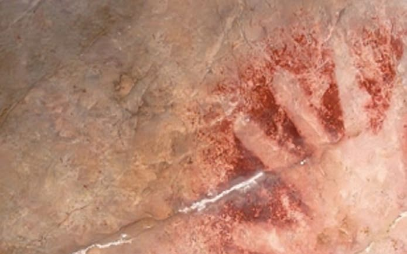<figcaption>Figure fig_ch01_p007_01 (Page 7)</figcaption></figure>
  <figure class="diagram-card" id="fig_ch01_p007_02">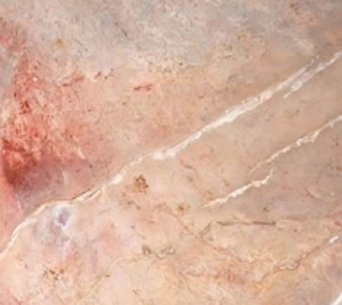<figcaption>Figure fig_ch01_p007_02 (Page 7)</figcaption></figure>
  <figure class="diagram-card" id="fig_ch01_p007_03"><figcaption>Figure fig_ch01_p007_03 (Page 7)</figcaption></figure>
  <figure class="diagram-card" id="fig_ch01_p007_04"><figcaption>Figure fig_ch01_p007_04 (Page 7)</figcaption></figure>
  <figure class="diagram-card" id="fig_ch01_p007_05"><figcaption>Figure fig_ch01_p007_05 (Page 7)</figcaption></figure>
  <figure class="diagram-card" id="fig_ch01_p007_06"><figcaption>Figure fig_ch01_p007_06 (Page 7)</figcaption></figure>
  <figure class="diagram-card" id="fig_ch01_p007_07"><figcaption>Figure fig_ch01_p007_07 (Page 7)</figcaption></figure>
  <figure class="diagram-card" id="fig_ch01_p007_08"><figcaption>Figure fig_ch01_p007_08 (Page 7)</figcaption></figure>
  <figure class="diagram-card" id="fig_ch01_p007_09"><figcaption>Figure fig_ch01_p007_09 (Page 7)</figcaption></figure>
  <figure class="diagram-card" id="fig_ch01_p007_10"><figcaption>Figure fig_ch01_p007_10 (Page 7)</figcaption></figure>
  <figure class="diagram-card" id="fig_ch01_p007_11"><figcaption>Figure fig_ch01_p007_11 (Page 7)</figcaption></figure>
  <figure class="diagram-card" id="fig_ch01_p007_12"><figcaption>Figure fig_ch01_p007_12 (Page 7)</figcaption></figure>
  <figure class="diagram-card" id="fig_ch01_p007_13"><figcaption>Figure fig_ch01_p007_13 (Page 7)</figcaption></figure>
  <figure class="diagram-card" id="fig_ch01_p007_14"><figcaption>Figure fig_ch01_p007_14 (Page 7)</figcaption></figure>
  <figure class="diagram-card" id="fig_ch01_p007_15"><figcaption>Figure fig_ch01_p007_15 (Page 7)</figcaption></figure>
  <figure class="diagram-card" id="fig_ch01_p007_16"><figcaption>Figure fig_ch01_p007_16 (Page 7)</figcaption></figure>
  <figure class="diagram-card" id="fig_ch01_p007_17"><figcaption>Figure fig_ch01_p007_17 (Page 7)</figcaption></figure>
  <figure class="diagram-card" id="fig_ch01_p007_18"><figcaption>Figure fig_ch01_p007_18 (Page 7)</figcaption></figure>
  <figure class="diagram-card" id="fig_ch01_p007_19"><figcaption>Figure fig_ch01_p007_19 (Page 7)</figcaption></figure>
  <figure class="diagram-card" id="fig_ch01_p007_20"><figcaption>Figure fig_ch01_p007_20 (Page 7)</figcaption></figure>
  <figure class="diagram-card" id="fig_ch01_p007_21"><figcaption>Figure fig_ch01_p007_21 (Page 7)</figcaption></figure>
  <figure class="diagram-card" id="fig_ch01_p007_22"><figcaption>Figure fig_ch01_p007_22 (Page 7)</figcaption></figure>
  <figure class="diagram-card" id="fig_ch01_p007_23"><figcaption>Figure fig_ch01_p007_23 (Page 7)</figcaption></figure>
  <div class="page-content">
    <p>”›šuśÆ†›ų§
Œ¢ųšĞ§</p>
    <p>1</p>
    <p>Œ†•DzŽcŒǯzœ“›s‘c
‚ƣ›ǬƂ</p>
    <p>š†“Dz‚Dzš–c</p>
    <p>Œ†•DzŽ¡}Šŗ›”Þ›š¡ų§
s’›ĚsśÆsĬ“¢ƽš
Šŗ›”Þ›gƽš›Žų¡“ÿ›Æ
“›sšĞzŦÚÇŒ†•Dz¡Ž
†”›ƀ›ăs‘Œš›Žų
f„›ŒŒ†•DzÅÚ§‚¡ź”ŅÚ
¢‘š}¡ˆšŽ‚šÄƂ¢‚Dzsc
f</p>
    <p>ā‘Ĭš›Žų›ƽ</p>
    <p>e“¡}¢†¡Žs¡ƽ›šÄ</p>
    <p>ŒšŅ¢Œe“ÅÚ§
s’›Œš›ŽųǬˆ›¡ųe“Å
sƽ¡sšĬ§Œ’sŦcmų›“
¢ˆšǬiˆsŽā‘c
sÆ –ž x›s‘ciĬšÚšÄˆ~›ă
gŎśǬe¢†sc”›š
</p>
    <p>āÇ–ŧ¡sĖ›w§}Ã</p>
    <p>ĬÄ sš’§xŠcøš“›cz†œ“
›¡sš’§xŠcøš“›csšs
Ĭš¢ƽš</p>
    <p>z“—ŐšÆ¡†—§“›¡źÍpŽĄÄŒsÇڍăsŝsÇÎmųՂ››Æ†›ųǬ‹šuŒš§
†›āÇŒs‘›Æ“š›ă‚§f„›ŒŒ†•DzŽ¡}zœ“›‚¡Ĺڝ›ăš§ hsśÆ–žx†
†Æsų‚§
sšĞzŦÚ‘›Æ †›ų§ Žä¢†}šÄ Œ†•DzÅ n‚‚Žc iˆsŽāÇ iˆ¢šu›ă›Žų
mųš§e¢Ŕ—cg“›¡}ˆų‚§?
z sƽ¡sšĬǬŒ’
</p>
    <p>z</p>
    <p></p>
    <p>z</p>
  </div>
</section><section class="page-section" id="page-8">
  <div class="page-header"><span class="page-number">Page 8</span></div>
  <figure class="diagram-card" id="fig_ch01_p008_01"><figcaption>Figure fig_ch01_p008_01 (Page 8)</figcaption></figure>
  <figure class="diagram-card" id="fig_ch01_p008_02"><figcaption>Figure fig_ch01_p008_02 (Page 8)</figcaption></figure>
  <figure class="diagram-card" id="fig_ch01_p008_03"><figcaption>Figure fig_ch01_p008_03 (Page 8)</figcaption></figure>
  <figure class="diagram-card" id="fig_ch01_p008_04"><figcaption>Figure fig_ch01_p008_04 (Page 8)</figcaption></figure>
  <figure class="diagram-card" id="fig_ch01_p008_05"><figcaption>Figure fig_ch01_p008_05 (Page 8)</figcaption></figure>
  <figure class="diagram-card" id="fig_ch01_p008_06">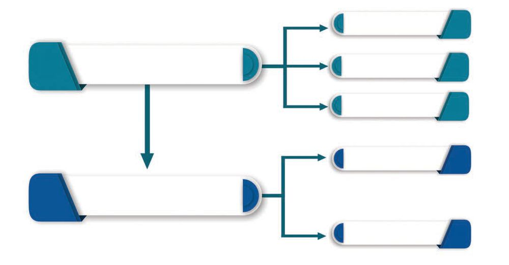<figcaption>Figure fig_ch01_p008_06 (Page 8)</figcaption></figure>
  <div class="page-content">
    <p>e Dzšc</p>
    <p>gŎciˆsŽāÇeښ¡ĹŒ†•DzÅm¡Ŧš¡Úf“”DzāÇ
ښ›iˆ¢šu›ă›ĞĬšsc?
z Ɯuā‘›Æ†›ų§Žä¢†}šÄ
z ¢“Ѝš}šÄ
</p>
    <p>z</p>
    <p>¢ŒƺĚ f“”DzāÇښ› Œ†•DzÅ †›Åƣ›ă iˆsŽāÇ
‚}ÚśÆ ”›sÇ¡sšĬǬ“š›Žų ˆ›ÆښĹ§ ”›¡}
ǚš†Ĺ§ ¢š—āÇs}ų“ų
Œ†•DzÅ iˆsŽāÇ †›Åƣ›ÚšÄ iˆ¢šu›ă “ǙÚ‘¡}
e}›ǚš†Ĺ›Æ ˆŽš“Ǚu¢“•sÅ Œš†“xŽ›Ņ¡Ĺ “›“›
sšvĞā‘š›‚›Ž›Úų
Ƃšxœ†”›šuc
(Palaeolithic Age)</p>
    <p>”›šuc
(Stone Age)</p>
    <p>Œ Dz”›šuc</p>
    <p>(Mesolithic Age)</p>
    <p>†“œ†”›šuc
(Neolithic Age)</p>
    <p>¡“ÿuc
(Bronze Age)</p>
    <p>¢š—uc
(Metal Age)
gŽƠuc
(Iron Age)</p>
    <p>”›šuc(Stone Age)
Œš†“xŽ›Ņś¡ź f„DzvĞ¡Ĺ ”›šu¡Œų§ “›‘›ă‚§ mŦ
¡sšĬš¡ų§ †›āÇ x›Ŧ›ă›Ğ¢Ĭš? eښĹ§ Œ†•DzÅ iˆsŽ
ā‘c f ā‘c Ƃ š†Œšc †›Åƣ›ă›Žų‚§ sƽ¡sšĬš§
e‚›†šÆ xŽ›ŅsšŽÅ f„DzvĞ¡Ĺ ”›šuc mų§ “›¢”•›
ƀ›Úų sƽsÇ¡sšĬǬ iˆsŽā‘¡} †›ÅƣšŽœ‚›¡
e}›ǚš†ŒšÚ› ”›šu¡Ĺ Ƃšxœ†”›šuc Œ Dz”›šuc
†“œ†”›šucmų›ā¡†Œžųš›‚›Ž›Úų
g“q¢Žšų›¡źc–“›¢”•‚sÇ¢†šÚšc</p>
    <p>8</p>
    <p>–šŒž—Dz”šȼc-</p>
  </div>
</section><section class="page-section" id="page-9">
  <div class="page-header"><span class="page-number">Page 9</span></div>
  <figure class="diagram-card" id="fig_ch01_p009_01"><figcaption>Figure fig_ch01_p009_01 (Page 9)</figcaption></figure>
  <figure class="diagram-card" id="fig_ch01_p009_02"><figcaption>Figure fig_ch01_p009_02 (Page 9)</figcaption></figure>
  <figure class="diagram-card" id="fig_ch01_p009_03"><figcaption>Figure fig_ch01_p009_03 (Page 9)</figcaption></figure>
  <figure class="diagram-card" id="fig_ch01_p009_04"><figcaption>Figure fig_ch01_p009_04 (Page 9)</figcaption></figure>
  <figure class="diagram-card" id="fig_ch01_p009_05"><figcaption>Figure fig_ch01_p009_05 (Page 9)</figcaption></figure>
  <figure class="diagram-card" id="fig_ch01_p009_06"><figcaption>Figure fig_ch01_p009_06 (Page 9)</figcaption></figure>
  <figure class="diagram-card" id="fig_ch01_p009_07"><figcaption>Figure fig_ch01_p009_07 (Page 9)</figcaption></figure>
  <figure class="diagram-card" id="fig_ch01_p009_08"><figcaption>Figure fig_ch01_p009_08 (Page 9)</figcaption></figure>
  <figure class="diagram-card" id="fig_ch01_p009_09"><figcaption>Figure fig_ch01_p009_09 (Page 9)</figcaption></figure>
  <figure class="diagram-card" id="fig_ch01_p009_10"><figcaption>Figure fig_ch01_p009_10 (Page 9)</figcaption></figure>
  <figure class="diagram-card" id="fig_ch01_p009_11">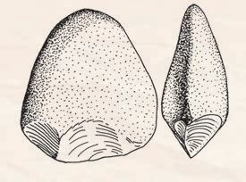<figcaption>Figure fig_ch01_p009_11 (Page 9)</figcaption></figure>
  <figure class="diagram-card" id="fig_ch01_p009_12">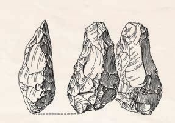<figcaption>Figure fig_ch01_p009_12 (Page 9)</figcaption></figure>
  <figure class="diagram-card" id="fig_ch01_p009_13">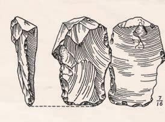<figcaption>Figure fig_ch01_p009_13 (Page 9)</figcaption></figure>
  <figure class="diagram-card" id="fig_ch01_p009_14"><figcaption>Figure fig_ch01_p009_14 (Page 9)</figcaption></figure>
  <figure class="diagram-card" id="fig_ch01_p009_15"><figcaption>Figure fig_ch01_p009_15 (Page 9)</figcaption></figure>
  <figure class="diagram-card" id="fig_ch01_p009_16"><figcaption>Figure fig_ch01_p009_16 (Page 9)</figcaption></figure>
  <figure class="diagram-card" id="fig_ch01_p009_17"><figcaption>Figure fig_ch01_p009_17 (Page 9)</figcaption></figure>
  <figure class="diagram-card" id="fig_ch01_p009_18"><figcaption>Figure fig_ch01_p009_18 (Page 9)</figcaption></figure>
  <div class="page-content">
    <p>”›šuśÆ†›ų§Œ¢ųšĞ§</p>
    <p>Ƃšxœ†”›šuc(Palaeolithic Age)
ˆŽÚÄ ”›š iˆsŽā‘š§ Ƃšxœ†”›šu sšvĞś¡
iˆsŽā‘¡}Ƃ š†–“›¢”•‚͈š›¢š–§ Î  Ƃšxœ†c ͐›¢Ĺš–§ Î
”› mųœ ŽĬ÷œÚˆ„ā‘›Æ†›ųš§ ͈š›¢š›Ĺ›s§Îmų
ˆ„cŽžˆc¡sšĬ‚§
f„›ŒŒ†•DzŽ¡} zœ“¢†šˆš ›s‘Œš› ŠŰŒǬ‚š§ iˆsŽ
ā‘¡} †›Åƣšc iˆsŽā‘¡} iˆ¢šuśÆ Œžų Ƃ š†
vĞāÇ iĬš›Žų‚š› ˆŽš“Ǚu¢“•sÅ xžĬ›Úš›Úų
e“x“¡}†Æsų
Ƃ¢šz†¡ƀ}ĹÆ
(Utilization)</p>
    <p>ŽžˆŒšǯc“ŽĹÆ
(Fashioning)</p>
    <p>⌓Æڎc
(Standardization)</p>
    <p>‹DzŒšsƽs¡‘ ŽžˆŒšǯc“ŽĹš¡‚
‚¡ųiˆ¢šu›Úų Žœ‚›</p>
    <p>‹DzŒšsƽs¡‘f“”Dzš†–Žc
ŽžˆŒšǯc“ŽĹ›iˆ¢šu›Úų Žœ‚›</p>
    <p>q¢Žšf“”Dzś†cƂ¢‚Dzs‚Žc
iˆsŽādž›Åƣ›Úų Žœ‚›</p>
    <p>Ƃšxœ†”›šuś¡“›“› vĞā‘›Æf„›ŒŒ†•DzÅiˆ¢šu›ă
“Dz‚DzǙ iˆsŽā‘¡} x›Ņā‘š§ x“¡} ‚ų›Ž›Úų‚§ e“
†›Žœä›ă§hiˆsŽā‘¡}–“›¢”•‚sLjЛs¡ƀ}Ĺs</p>
    <p>iŽ‘ÄsƽˆsŽāÇ</p>
    <p>„ǵ›ŒtŒšĶ”›šiˆsŽāÇ</p>
    <p>sÆ㜑ˆsŽāÇ</p>
    <p>(Pebble tools)</p>
    <p>(Biface core tools)</p>
    <p>(Flake tools)</p>
    <p>ǢšÄ¢Å§-&lt;</p>
    <p>9</p>
  </div>
</section><section class="page-section" id="page-10">
  <div class="page-header"><span class="page-number">Page 10</span></div>
  <figure class="diagram-card" id="fig_ch01_p010_01"><figcaption>Figure fig_ch01_p010_01 (Page 10)</figcaption></figure>
  <figure class="diagram-card" id="fig_ch01_p010_02"><figcaption>Figure fig_ch01_p010_02 (Page 10)</figcaption></figure>
  <figure class="diagram-card" id="fig_ch01_p010_03"><figcaption>Figure fig_ch01_p010_03 (Page 10)</figcaption></figure>
  <figure class="diagram-card" id="fig_ch01_p010_04"><figcaption>Figure fig_ch01_p010_04 (Page 10)</figcaption></figure>
  <figure class="diagram-card" id="fig_ch01_p010_05"><figcaption>Figure fig_ch01_p010_05 (Page 10)</figcaption></figure>
  <figure class="diagram-card" id="fig_ch01_p010_06"><figcaption>Figure fig_ch01_p010_06 (Page 10)</figcaption></figure>
  <figure class="diagram-card" id="fig_ch01_p010_07"><figcaption>Figure fig_ch01_p010_07 (Page 10)</figcaption></figure>
  <figure class="diagram-card" id="fig_ch01_p010_08"><figcaption>Figure fig_ch01_p010_08 (Page 10)</figcaption></figure>
  <figure class="diagram-card" id="fig_ch01_p010_09"><figcaption>Figure fig_ch01_p010_09 (Page 10)</figcaption></figure>
  <figure class="diagram-card" id="fig_ch01_p010_10"><figcaption>Figure fig_ch01_p010_10 (Page 10)</figcaption></figure>
  <figure class="diagram-card" id="fig_ch01_p010_11"><figcaption>Figure fig_ch01_p010_11 (Page 10)</figcaption></figure>
  <figure class="diagram-card" id="fig_ch01_p010_12"><figcaption>Figure fig_ch01_p010_12 (Page 10)</figcaption></figure>
  <figure class="diagram-card" id="fig_ch01_p010_13"><figcaption>Figure fig_ch01_p010_13 (Page 10)</figcaption></figure>
  <figure class="diagram-card" id="fig_ch01_p010_14"><figcaption>Figure fig_ch01_p010_14 (Page 10)</figcaption></figure>
  <figure class="diagram-card" id="fig_ch01_p010_15"><figcaption>Figure fig_ch01_p010_15 (Page 10)</figcaption></figure>
  <figure class="diagram-card" id="fig_ch01_p010_16">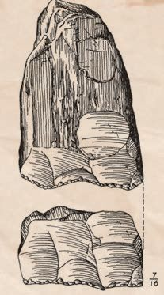<figcaption>Figure fig_ch01_p010_16 (Page 10)</figcaption></figure>
  <figure class="diagram-card" id="fig_ch01_p010_17">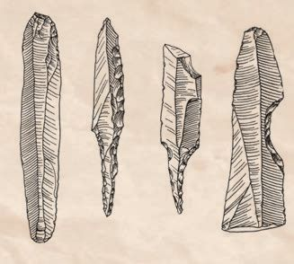<figcaption>Figure fig_ch01_p010_17 (Page 10)</figcaption></figure>
  <figure class="diagram-card" id="fig_ch01_p010_18">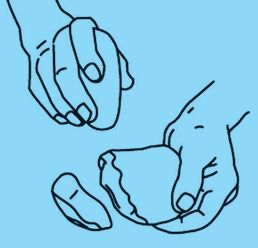<figcaption>Figure fig_ch01_p010_18 (Page 10)</figcaption></figure>
  <figure class="diagram-card" id="fig_ch01_p010_19"><figcaption>Figure fig_ch01_p010_19 (Page 10)</figcaption></figure>
  <figure class="diagram-card" id="fig_ch01_p010_20"><figcaption>Figure fig_ch01_p010_20 (Page 10)</figcaption></figure>
  <figure class="diagram-card" id="fig_ch01_p010_21"><figcaption>Figure fig_ch01_p010_21 (Page 10)</figcaption></figure>
  <figure class="diagram-card" id="fig_ch01_p010_22"><figcaption>Figure fig_ch01_p010_22 (Page 10)</figcaption></figure>
  <figure class="diagram-card" id="fig_ch01_p010_23"><figcaption>Figure fig_ch01_p010_23 (Page 10)</figcaption></figure>
  <figure class="diagram-card" id="fig_ch01_p010_24"><figcaption>Figure fig_ch01_p010_24 (Page 10)</figcaption></figure>
  <figure class="diagram-card" id="fig_ch01_p010_25"><figcaption>Figure fig_ch01_p010_25 (Page 10)</figcaption></figure>
  <figure class="diagram-card" id="fig_ch01_p010_26"><figcaption>Figure fig_ch01_p010_26 (Page 10)</figcaption></figure>
  <figure class="diagram-card" id="fig_ch01_p010_27"><figcaption>Figure fig_ch01_p010_27 (Page 10)</figcaption></figure>
  <figure class="diagram-card" id="fig_ch01_p010_28"><figcaption>Figure fig_ch01_p010_28 (Page 10)</figcaption></figure>
  <div class="page-content">
    <p>e Dzšc</p>
    <p>ŒšĶ”›s‘c
sÆ㜑s‘c
(Core and Flakes)</p>
    <p>pŽ s•c sƽ›¡†
Ž¢Ĭš e‚› ›s¢Œš
s•ā‘š› ¡ˆšĞ›
ڝ¢ƠšÇ
e‚›Æ
nǯ“c “› s•
¡Ĺ ŒšĶ”› (Core)
mųc ¡x› s•
ā¡‘ sÆ㜑s
¡‘ųc ÀDNHV  “›‘›
ڝų  ŒšĶ”›
¡sšĬ§ †›Åƣ›Úų
“¡ ŒšĶ”›š iˆs
ŽāÇ mųc sÆ
㜑sÇ¡sšĬ§ †›Å
ƣ›Úų“¡ sÆăœ
‘ˆsŽāÇ mųc
“›‘›Úų</p>
    <p>¡“Ğ›Œ›Úš†Ǭ
sƽˆsŽāÇ</p>
    <p>¢Ɨ§ –š¢ÿ‚›sŽœ‚››Æ
†›Åƣ›ă”›šiˆsŽāÇ</p>
    <p>(Chopper-Chopping tools)</p>
    <p>Ƃšxœ†”›šuś¡źe“–š†vĞśÆ”›sÇ¡sšĬ§
†›Åƣ›ăiˆsŽāÇÚ§ˆ¡Œeǚ›sÇ¡sšĬ§†›Åƣ›ă
iˆsŽā‘cŒ†•DzÅiˆ¢šu›ă›Žųx“¡}†Æs››
Ž›Úųx›ŅādžœŽ›ä›Ús</p>
    <p>ŒšĶ”›
(Core)
sÆxœ‘§
(Flake)</p>
    <p>x›ŅśÆ sšų iˆsŽāÇÚ§  †›āÇÚ§  ˆŽ›x›‚Œš
n¡‚ÿ›ciˆsŽ“Œš›–šŒDzŒ¢Ĭš?i¡Ĭÿ›Æe“n¡‚ƽš¡Œų§
m’‚s
z
z
z</p>
    <p>10</p>
    <p>–šŒž—Dz”šȼc-</p>
  </div>
</section><section class="page-section" id="page-11">
  <div class="page-header"><span class="page-number">Page 11</span></div>
  <figure class="diagram-card" id="fig_ch01_p011_01"><figcaption>Figure fig_ch01_p011_01 (Page 11)</figcaption></figure>
  <figure class="diagram-card" id="fig_ch01_p011_02"><figcaption>Figure fig_ch01_p011_02 (Page 11)</figcaption></figure>
  <figure class="diagram-card" id="fig_ch01_p011_03"><figcaption>Figure fig_ch01_p011_03 (Page 11)</figcaption></figure>
  <figure class="diagram-card" id="fig_ch01_p011_04"><figcaption>Figure fig_ch01_p011_04 (Page 11)</figcaption></figure>
  <figure class="diagram-card" id="fig_ch01_p011_05"><figcaption>Figure fig_ch01_p011_05 (Page 11)</figcaption></figure>
  <figure class="diagram-card" id="fig_ch01_p011_06"><figcaption>Figure fig_ch01_p011_06 (Page 11)</figcaption></figure>
  <figure class="diagram-card" id="fig_ch01_p011_07"><figcaption>Figure fig_ch01_p011_07 (Page 11)</figcaption></figure>
  <figure class="diagram-card" id="fig_ch01_p011_08"><figcaption>Figure fig_ch01_p011_08 (Page 11)</figcaption></figure>
  <figure class="diagram-card" id="fig_ch01_p011_09"><figcaption>Figure fig_ch01_p011_09 (Page 11)</figcaption></figure>
  <figure class="diagram-card" id="fig_ch01_p011_10"><figcaption>Figure fig_ch01_p011_10 (Page 11)</figcaption></figure>
  <figure class="diagram-card" id="fig_ch01_p011_11"><figcaption>Figure fig_ch01_p011_11 (Page 11)</figcaption></figure>
  <figure class="diagram-card" id="fig_ch01_p011_12"><figcaption>Figure fig_ch01_p011_12 (Page 11)</figcaption></figure>
  <figure class="diagram-card" id="fig_ch01_p011_13"><figcaption>Figure fig_ch01_p011_13 (Page 11)</figcaption></figure>
  <figure class="diagram-card" id="fig_ch01_p011_14"><figcaption>Figure fig_ch01_p011_14 (Page 11)</figcaption></figure>
  <figure class="diagram-card" id="fig_ch01_p011_15"><figcaption>Figure fig_ch01_p011_15 (Page 11)</figcaption></figure>
  <figure class="diagram-card" id="fig_ch01_p011_16"><figcaption>Figure fig_ch01_p011_16 (Page 11)</figcaption></figure>
  <figure class="diagram-card" id="fig_ch01_p011_17">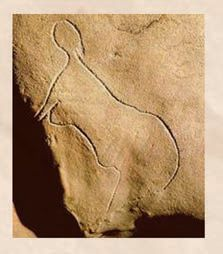<figcaption>Figure fig_ch01_p011_17 (Page 11)</figcaption></figure>
  <figure class="diagram-card" id="fig_ch01_p011_18"><figcaption>Figure fig_ch01_p011_18 (Page 11)</figcaption></figure>
  <figure class="diagram-card" id="fig_ch01_p011_19"><figcaption>Figure fig_ch01_p011_19 (Page 11)</figcaption></figure>
  <figure class="diagram-card" id="fig_ch01_p011_20">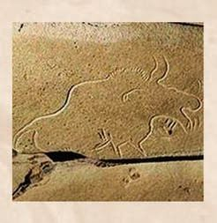<figcaption>Figure fig_ch01_p011_20 (Page 11)</figcaption></figure>
  <figure class="diagram-card" id="fig_ch01_p011_21"><figcaption>Figure fig_ch01_p011_21 (Page 11)</figcaption></figure>
  <figure class="diagram-card" id="fig_ch01_p011_22">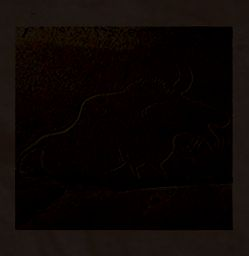<figcaption>Figure fig_ch01_p011_22 (Page 11)</figcaption></figure>
  <figure class="diagram-card" id="fig_ch01_p011_23">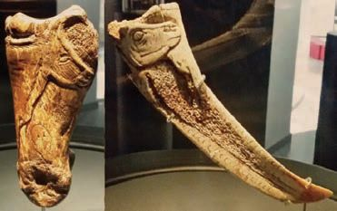<figcaption>Figure fig_ch01_p011_23 (Page 11)</figcaption></figure>
  <figure class="diagram-card" id="fig_ch01_p011_24"><figcaption>Figure fig_ch01_p011_24 (Page 11)</figcaption></figure>
  <figure class="diagram-card" id="fig_ch01_p011_25"><figcaption>Figure fig_ch01_p011_25 (Page 11)</figcaption></figure>
  <figure class="diagram-card" id="fig_ch01_p011_26"><figcaption>Figure fig_ch01_p011_26 (Page 11)</figcaption></figure>
  <figure class="diagram-card" id="fig_ch01_p011_27"><figcaption>Figure fig_ch01_p011_27 (Page 11)</figcaption></figure>
  <figure class="diagram-card" id="fig_ch01_p011_28">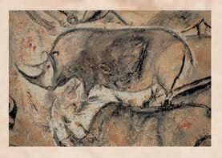<figcaption>Figure fig_ch01_p011_28 (Page 11)</figcaption></figure>
  <figure class="diagram-card" id="fig_ch01_p011_29"><figcaption>Figure fig_ch01_p011_29 (Page 11)</figcaption></figure>
  <figure class="diagram-card" id="fig_ch01_p011_30"><figcaption>Figure fig_ch01_p011_30 (Page 11)</figcaption></figure>
  <figure class="diagram-card" id="fig_ch01_p011_31"><figcaption>Figure fig_ch01_p011_31 (Page 11)</figcaption></figure>
  <figure class="diagram-card" id="fig_ch01_p011_32"><figcaption>Figure fig_ch01_p011_32 (Page 11)</figcaption></figure>
  <figure class="diagram-card" id="fig_ch01_p011_33"><figcaption>Figure fig_ch01_p011_33 (Page 11)</figcaption></figure>
  <figure class="diagram-card" id="fig_ch01_p011_34"><figcaption>Figure fig_ch01_p011_34 (Page 11)</figcaption></figure>
  <figure class="diagram-card" id="fig_ch01_p011_35"><figcaption>Figure fig_ch01_p011_35 (Page 11)</figcaption></figure>
  <figure class="diagram-card" id="fig_ch01_p011_36"><figcaption>Figure fig_ch01_p011_36 (Page 11)</figcaption></figure>
  <div class="page-content">
    <p>”›šuśÆ†›ų§Œ¢ųšĞ§</p>
    <p>Ƃš x œ † ” ›  š  u Ĺ › ¡   i ˆ s Ž  ā ‘ ¡ }  † › Å ƣ š  “ c
–š¢ÿ‚›s“‘Å㍝cmų“›•Ĺ›ÆpŽxÅă–cv}›ƀ›Ús</p>
    <p>¢•š¡“ƋšÄ–§</p>
    <p>š¢ǘšƋšÄ–§</p>
    <p>sǡšs§ ƋšÄ–§ u—›¡ ¢sš››Ğ
x›ŅāÇ</p>
    <p>f†¡ÚšƠ›Æ
†›Åƣ›ă ”›ƺc
–§ǘ§•Dz</p>
    <p>¡ǝ›†›¡šuŌu—s‘›Æ
†›ųcs¡Ĭśeǚ›s‘›¡
¡sšĹˆ›sÇ</p>
    <p>Ƃšxœ†Œ†•DzŽ¡} sšǕǐ›s‘¡} x›Ņā‘š§ Œs‘›Æ ‚ų›
Ž›Úų‚§hx›Ņā‘›Æ†›ų§ †›āÇÚ§ m¡ŦƽšcŒ†ǡ›š
ښÄs’›ų. ‘›‚Œšp’ÚēŽsÇ¢sš››Ğx›ŅāÇ
”›ƺāÇ ‚}ā› “›“›  ŒšÅuāÇ Ƃšxœ† ”›šuś¡ź
e“–š†vĞśÆ f”“›†›ŒĹ›†§ iˆ¢šu›ă›Žų‚š›
hx›Ņā‘›Æ†›ųcŒ†–›šÚšÄs’›cƜuā‘¡}x›Ņœ
sŽc ¢•š¡“ š¢ǘš u—sÇ  Ɯuś¡źc ȼœ¡}c
¢sš››Ğ Žžˆc sǡšs§ u—  “œ†–§ Ƃ‚›Œ –§ǘ§ •Dz 
mų›“ e†Ǒš†“Œš¢š “›”ǵš–“Œš¢š ŠŰŒǬ‚š›
ˆŽš“Ǚu¢“•sÅ e‹›Ƃš¡ƀ}ų ¡ǝ›†›¡ š uŌ
u—›Æ †›ų§ s¡Ĭś eǚ›s‘›¡ ¡sšĹˆ›sÇ
eښ¡ĹŒ†•DzŽ¡}sš£“„u§ Dzś†§¡‚‘›“š§
ǢšÄ¢Å§-&lt;</p>
    <p>11</p>
  </div>
</section><section class="page-section" id="page-12">
  <div class="page-header"><span class="page-number">Page 12</span></div>
  <figure class="diagram-card" id="fig_ch01_p012_01"><figcaption>Figure fig_ch01_p012_01 (Page 12)</figcaption></figure>
  <figure class="diagram-card" id="fig_ch01_p012_02"><figcaption>Figure fig_ch01_p012_02 (Page 12)</figcaption></figure>
  <figure class="diagram-card" id="fig_ch01_p012_03"><figcaption>Figure fig_ch01_p012_03 (Page 12)</figcaption></figure>
  <figure class="diagram-card" id="fig_ch01_p012_04"><figcaption>Figure fig_ch01_p012_04 (Page 12)</figcaption></figure>
  <figure class="diagram-card" id="fig_ch01_p012_05"><figcaption>Figure fig_ch01_p012_05 (Page 12)</figcaption></figure>
  <figure class="diagram-card" id="fig_ch01_p012_06"><figcaption>Figure fig_ch01_p012_06 (Page 12)</figcaption></figure>
  <figure class="diagram-card" id="fig_ch01_p012_07"><figcaption>Figure fig_ch01_p012_07 (Page 12)</figcaption></figure>
  <figure class="diagram-card" id="fig_ch01_p012_08"><figcaption>Figure fig_ch01_p012_08 (Page 12)</figcaption></figure>
  <div class="page-content">
    <p>e Dzšc</p>
    <p>u—šx›ŅāÇ “ŽƩų‚›†§ “›“› ‚Žc †›āÇ iˆ¢šu›ă›Ž
ų ¡x}›sÇ ŒŽĹ›¡ź ¢‚š§ sš§sÇ mų›“ eŽă§ ¡xÿÆ¡ƀš
}› ¢xÅŚ§ †›āÇ iĬšÚ››Žų‚§ –žŽDzƂsš”c mŚÄ
s’›šĹ u—¡} iNj›Ĺ›s‘›š§  x›ŅāÇ “Žă›Žų‚§ 
sƖžx›s‘c Œ†Ǭ f ā‘c iˆ¢šu›ăš§ gŎc x›Ņ
āÇe“Å“Žă›Žų‚§u—s‘›¡ ¢ŒÆ‹›Ĺ›s‘›cx›ŅāÇ“Ž
㛎ų‚š›sššÄs’›cƂšxœ†Œ†•DzÅfÅz›ă£“蚆›s
“›sš–Ĺ›¡źc–š¢ÿ‚›s£“„u§ Dzś¡źc¡‚‘›“š›gŎc
x›Ņā‘c”›ƺā‘csÚšÚ¡ƀ}ų
Ƃšxœ†”›šusš¡ĹiˆsŽāÇssÇmų›“›Æ†›ųc
Œ†•DzŽ¡} zœ“›‚¡Ĺڝ›ăǬ m¡Ŧƽšc “›“Žā‘š§ ‹›Ú
ų¡‚ų§ ¢†šÚšc</p>
    <p>ˆŽÚÄsƽˆsŽāÇiˆ¢šu›
㛎ų
u—s‘›c‚ǡšǚā‘›c
“–›ă›Žų
¢“Ѝš}Æ¢”tŽcmų›“f›
Žųiˆzœ“†ŒšÅuāÇ</p>
    <p>Ƃšxœ†
”›šuc</p>
    <p>ŠšÄsÇ ˆǯāÇ  f›Žų
–Œž—Ĺ›¡źe}›ǚš†v}sc
ˆŽ•ŶšÅ ¢“Ѝš}›c ȼœsÇ
¢”tŽĹ›cnÅ¡ƀĞ›Žų</p>
    <p>‹äc–c‹Ž›ă“㛎ų›ƽ</p>
    <p>†š¢}š}›zœ“›‚Œš§†›†›ų›Žų‚§</p>
    <p>12</p>
    <p>–šŒž—Dz”šȼc-</p>
    <p>ŠšÄsÇ
†ž›Æ‚š¡’
ecuāÇ
iÇ¡ƀ}ų
¡x–Œž—ā
‘š§ŠšÄ
sÇ ˆǯāÇ 
ŽÞŠŰŒš§
ŠšÄ›¡
ecuā¡‘
ˆŽǝŽc
ŠŰ›ƀ›ă›
Žų‚§</p>
  </div>
</section><section class="page-section" id="page-13">
  <div class="page-header"><span class="page-number">Page 13</span></div>
  <figure class="diagram-card" id="fig_ch01_p013_01"><figcaption>Figure fig_ch01_p013_01 (Page 13)</figcaption></figure>
  <figure class="diagram-card" id="fig_ch01_p013_02"><figcaption>Figure fig_ch01_p013_02 (Page 13)</figcaption></figure>
  <figure class="diagram-card" id="fig_ch01_p013_03"><figcaption>Figure fig_ch01_p013_03 (Page 13)</figcaption></figure>
  <figure class="diagram-card" id="fig_ch01_p013_04"><figcaption>Figure fig_ch01_p013_04 (Page 13)</figcaption></figure>
  <figure class="diagram-card" id="fig_ch01_p013_05"><figcaption>Figure fig_ch01_p013_05 (Page 13)</figcaption></figure>
  <figure class="diagram-card" id="fig_ch01_p013_06"><figcaption>Figure fig_ch01_p013_06 (Page 13)</figcaption></figure>
  <figure class="diagram-card" id="fig_ch01_p013_07"><figcaption>Figure fig_ch01_p013_07 (Page 13)</figcaption></figure>
  <figure class="diagram-card" id="fig_ch01_p013_08"><figcaption>Figure fig_ch01_p013_08 (Page 13)</figcaption></figure>
  <figure class="diagram-card" id="fig_ch01_p013_09"><figcaption>Figure fig_ch01_p013_09 (Page 13)</figcaption></figure>
  <figure class="diagram-card" id="fig_ch01_p013_10"><figcaption>Figure fig_ch01_p013_10 (Page 13)</figcaption></figure>
  <figure class="diagram-card" id="fig_ch01_p013_11">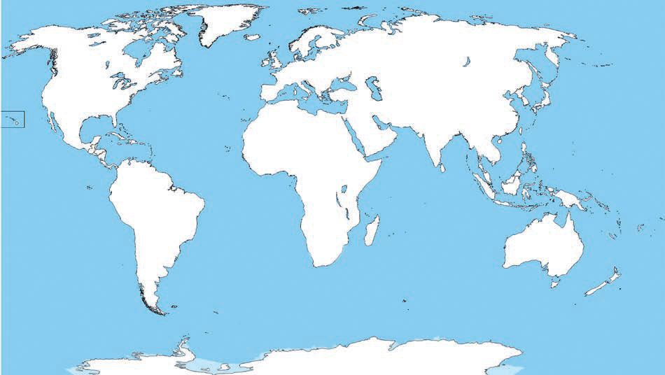<figcaption>Figure fig_ch01_p013_11 (Page 13)</figcaption></figure>
  <figure class="diagram-card" id="fig_ch01_p013_12"><figcaption>Figure fig_ch01_p013_12 (Page 13)</figcaption></figure>
  <figure class="diagram-card" id="fig_ch01_p013_13">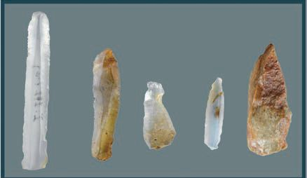<figcaption>Figure fig_ch01_p013_13 (Page 13)</figcaption></figure>
  <div class="page-content">
    <p>”›šuśÆ†›ų§Œ¢ųšĞ§</p>
    <p>‹žˆ}c
š–§¢sšu—
šuŌu—</p>
    <p>–§ǘ§
s–šs§u—
¢•š¡“u—</p>
    <p>¢šs‹žˆ}śÆ ¢Žt¡ƀ}Ĺ››Ž›Úų Ƃšxœ†”›šu ¢sůā
‘¡} –“›¢”•‚sÇ¢Žt¡ƀ}Ĺs</p>
    <p>Œ Dz”›šuc(Mesolithic Age)
Ƃšxœ†”›šuśÆ†›ųc†“œ†”›šuś¢ÚǬˆŽ›“ÅĹ
†Ĺ›¡źvĞŒš§Œ Dz”›šucÍ¡Œ¢–š–§ Î Œ Dzc ͐›¢Ĺš–§Î ”› 
mųœ ŽĬ ÷œÚˆ„ā‘›Æ †›ųš§ Í¡Œ¢–š›Ĺ›s§ Î  mų ˆ„c
i}¡}Ĺ‚§
†Æs››Ž›Úųx›Ņādž›Žœä›ÚsƂšxœ†
”›šuś¡ iˆsŽā‘c x›ŅśÆ
sšų Œ Dz”›šuś¡ iˆsŽā‘c
‚ƣ›Ǭ“Dz‚Dzš–c†ŒÚ§ˆŽ›¢”š ›Úšc
z</p>
    <p>Ƃšxœ†”›šuśÆiˆ¢šu›ă›Žų
“¢ÚšÇ¡x›iˆsŽā‘š§g“</p>
    <p>z</p>
    <p>£Œ¢âš›ĹsÇ(Microliths)eƒ“š
–žä§Œ”›sÇmų§“›‘›ÚųsƽˆsŽ
āÇiˆ¢šu›ă›ŽųsšŒš›‚§</p>
    <p>Œ Dz”›šuś¡iˆsŽāÇ</p>
    <p>f„›ŒŒ†•DzŽ¡} f”“›†›ŒĹ›¡ź “›sš–c Ƃšxœ†”›šu
ś¡źe“–š†vĞā‘›š¡ų§ŒƠ§ –žx›ƀ›ă›Žų¢ƽšmųšÆ
ǢšÄ¢Å§-&lt;</p>
    <p>13</p>
  </div>
</section><section class="page-section" id="page-14">
  <div class="page-header"><span class="page-number">Page 14</span></div>
  <figure class="diagram-card" id="fig_ch01_p014_01"><figcaption>Figure fig_ch01_p014_01 (Page 14)</figcaption></figure>
  <figure class="diagram-card" id="fig_ch01_p014_02"><figcaption>Figure fig_ch01_p014_02 (Page 14)</figcaption></figure>
  <figure class="diagram-card" id="fig_ch01_p014_03"><figcaption>Figure fig_ch01_p014_03 (Page 14)</figcaption></figure>
  <figure class="diagram-card" id="fig_ch01_p014_04"><figcaption>Figure fig_ch01_p014_04 (Page 14)</figcaption></figure>
  <figure class="diagram-card" id="fig_ch01_p014_05"><figcaption>Figure fig_ch01_p014_05 (Page 14)</figcaption></figure>
  <figure class="diagram-card" id="fig_ch01_p014_06"><figcaption>Figure fig_ch01_p014_06 (Page 14)</figcaption></figure>
  <figure class="diagram-card" id="fig_ch01_p014_07"><figcaption>Figure fig_ch01_p014_07 (Page 14)</figcaption></figure>
  <figure class="diagram-card" id="fig_ch01_p014_08"><figcaption>Figure fig_ch01_p014_08 (Page 14)</figcaption></figure>
  <figure class="diagram-card" id="fig_ch01_p014_09"><figcaption>Figure fig_ch01_p014_09 (Page 14)</figcaption></figure>
  <figure class="diagram-card" id="fig_ch01_p014_10"><figcaption>Figure fig_ch01_p014_10 (Page 14)</figcaption></figure>
  <figure class="diagram-card" id="fig_ch01_p014_11"><figcaption>Figure fig_ch01_p014_11 (Page 14)</figcaption></figure>
  <figure class="diagram-card" id="fig_ch01_p014_12"><figcaption>Figure fig_ch01_p014_12 (Page 14)</figcaption></figure>
  <figure class="diagram-card" id="fig_ch01_p014_13"><figcaption>Figure fig_ch01_p014_13 (Page 14)</figcaption></figure>
  <figure class="diagram-card" id="fig_ch01_p014_14">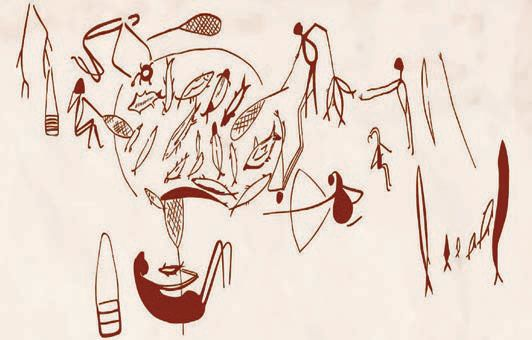<figcaption>Figure fig_ch01_p014_14 (Page 14)</figcaption></figure>
  <figure class="diagram-card" id="fig_ch01_p014_15"><figcaption>Figure fig_ch01_p014_15 (Page 14)</figcaption></figure>
  <figure class="diagram-card" id="fig_ch01_p014_16"><figcaption>Figure fig_ch01_p014_16 (Page 14)</figcaption></figure>
  <figure class="diagram-card" id="fig_ch01_p014_17"><figcaption>Figure fig_ch01_p014_17 (Page 14)</figcaption></figure>
  <figure class="diagram-card" id="fig_ch01_p014_18">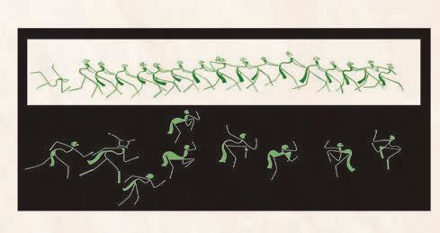<figcaption>Figure fig_ch01_p014_18 (Page 14)</figcaption></figure>
  <figure class="diagram-card" id="fig_ch01_p014_19">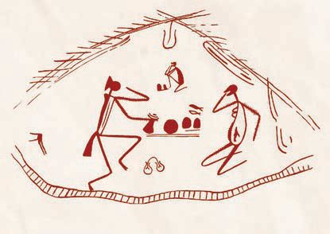<figcaption>Figure fig_ch01_p014_19 (Page 14)</figcaption></figure>
  <figure class="diagram-card" id="fig_ch01_p014_20"><figcaption>Figure fig_ch01_p014_20 (Page 14)</figcaption></figure>
  <figure class="diagram-card" id="fig_ch01_p014_21"><figcaption>Figure fig_ch01_p014_21 (Page 14)</figcaption></figure>
  <figure class="diagram-card" id="fig_ch01_p014_22"><figcaption>Figure fig_ch01_p014_22 (Page 14)</figcaption></figure>
  <figure class="diagram-card" id="fig_ch01_p014_23">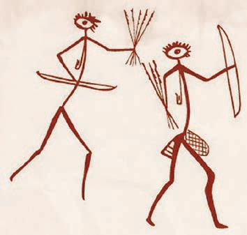<figcaption>Figure fig_ch01_p014_23 (Page 14)</figcaption></figure>
  <figure class="diagram-card" id="fig_ch01_p014_24"><figcaption>Figure fig_ch01_p014_24 (Page 14)</figcaption></figure>
  <figure class="diagram-card" id="fig_ch01_p014_25"><figcaption>Figure fig_ch01_p014_25 (Page 14)</figcaption></figure>
  <figure class="diagram-card" id="fig_ch01_p014_26"><figcaption>Figure fig_ch01_p014_26 (Page 14)</figcaption></figure>
  <figure class="diagram-card" id="fig_ch01_p014_27"><figcaption>Figure fig_ch01_p014_27 (Page 14)</figcaption></figure>
  <figure class="diagram-card" id="fig_ch01_p014_28"><figcaption>Figure fig_ch01_p014_28 (Page 14)</figcaption></figure>
  <figure class="diagram-card" id="fig_ch01_p014_29"><figcaption>Figure fig_ch01_p014_29 (Page 14)</figcaption></figure>
  <div class="page-content">
    <p>e Dzšc</p>
    <p>gŦDz›Æ Ƃ š†Œšc h “›sš–c †ŒÚ§ sššÄ s’›ų‚§
Œ Dz”›šuśš§   Œ DzƂ¢„”›¡ ‹›c¢Š§ s  t§ z š¢“šÅ
s¢ƒšĞ› mųœ u—š¢sůā‘›¡ sšǕǐ›sÇ f„›ŒŒ†•Dz¡ź
zœ“›‚Žœ‚›sÇŒ†ǡ›šÚšÄ–—š›ÚųĬ§</p>
    <p>‹›c¢Š§s</p>
    <p>s¢ƒšĞ›</p>
    <p>t§zš¢“šÅ</p>
    <p>t§zš¢“šÅ</p>
    <p>t§zš¢“šÅ
‹›c¢Š§s</p>
    <p>14</p>
    <p>–šŒž—Dz”šȼc-</p>
  </div>
</section><section class="page-section" id="page-15">
  <div class="page-header"><span class="page-number">Page 15</span></div>
  <figure class="diagram-card" id="fig_ch01_p015_01"><figcaption>Figure fig_ch01_p015_01 (Page 15)</figcaption></figure>
  <figure class="diagram-card" id="fig_ch01_p015_02"><figcaption>Figure fig_ch01_p015_02 (Page 15)</figcaption></figure>
  <figure class="diagram-card" id="fig_ch01_p015_03"><figcaption>Figure fig_ch01_p015_03 (Page 15)</figcaption></figure>
  <figure class="diagram-card" id="fig_ch01_p015_04"><figcaption>Figure fig_ch01_p015_04 (Page 15)</figcaption></figure>
  <figure class="diagram-card" id="fig_ch01_p015_05">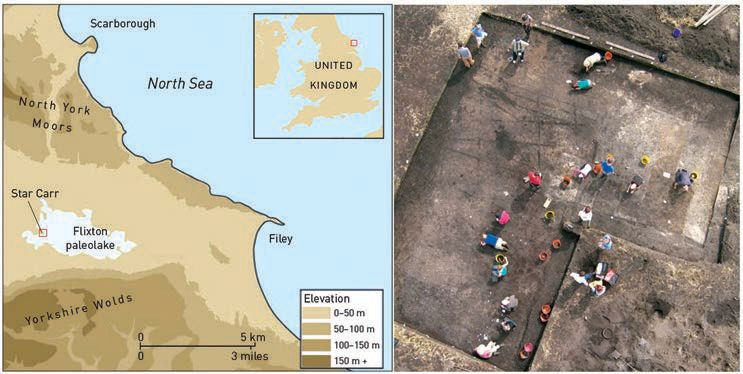<figcaption>Figure fig_ch01_p015_05 (Page 15)</figcaption></figure>
  <div class="page-content">
    <p>”›šuśÆ†›ų§Œ¢ųšĞ§</p>
    <p>x›ŅāÇ †œŽ›ä›ă§ e“ Ƃšxœ†Œ†•Dz¡ź n¡‚ƽšc zœ“œ‚Žcuā¡‘š§
x›ŅœsŽ›ă›Ž›Úų¡‚ų§ˆĞ›s¡ƀ}Ĺs

z ¢“Ѝš}Æ 

z
</p>
    <p></p>
    <p>z</p>
    <p></p>
    <p></p>
    <p></p>
    <p>z</p>
    <p></p>
    <p></p>
    <p>z</p>
    <p></p>
    <p></p>
    <p></p>
    <p>z</p>
    <p>h x›ŅĹ›Æ†›ų§ Œ Dz”›šuś¡ Œ†•DzŽ¡} zœ“›‚Žœ‚›
s¡‘ƀǯ› †ŒÚ§Œ†ǡ›šÚšÄs’›ųĬ§hsšvĞś¡ź–“›
¢”•‚sÇx“¡}†Æsų
z
£Œ¢âš›ĹsÇeƒ“š–žä§Œ”›š ā‘¡}iˆ¢šuc
z
¢“Ѝš}›†c¢”tŽĹ›†cˆ¡ŒŒœÄˆ›}Ĺ“ciˆzœ“†
ŒšÅuŒšÚ›
z
Ɯuā¡‘gÚ›“‘Å՛¡ź–žx†sÇ
z
“›¢†š„āÇ
z
›cuš}›ǚš†Ĺ›Ǭ¡‚š’›Æ“›‹z†c
Œ Dz”›šu¢sůāÇ
ǢšÅsšÅ
‰š—›šÄu—
–£Ž†—ŏš§</p>
    <p>gcøĬ§
Njœÿ
gŦDz iĹÅƂ¢„”§</p>
    <p>ǢšÅsšÅž¢šƀ›¡Œ Dz”›šu¢sůc
“}ڝs›’ÚÄgcøĬ›Æs¡ĬśŒ Dz”›šuś¡pŽ‚ǡše ›“š–
¢sůŒš›‚§£z“e“”›ǐā‘¡}–šų› DzŒš§ h¢sůś¡źƂ š†–“›
¢”•‚”›sÇ¡sšĬceǚ›sÇ¡sšĬc †›Åƣ›ăiˆsŽāÇg“›¡}†›ų§
s¡Ĭś›
НĬ§ f„Dz
sšŒŽƀ›
¡}¡‚‘›“
s‘c g“›¡}
†›ų§  ‹›ă›
НĬ§   f„›Œ
Œ†•DzÅ h
Ƃ¢„”¡Ĺ
‚šÆښ›s
“š–ǚŒš›
iˆ¢šu›ă›Ž
ų¡“ų§ sŽ
‚¡ƀ}ų
ǢšÄ¢Å§-&lt;</p>
    <p>15</p>
  </div>
</section><section class="page-section" id="page-16">
  <div class="page-header"><span class="page-number">Page 16</span></div>
  <figure class="diagram-card" id="fig_ch01_p016_01"><figcaption>Figure fig_ch01_p016_01 (Page 16)</figcaption></figure>
  <figure class="diagram-card" id="fig_ch01_p016_02"><figcaption>Figure fig_ch01_p016_02 (Page 16)</figcaption></figure>
  <figure class="diagram-card" id="fig_ch01_p016_03"><figcaption>Figure fig_ch01_p016_03 (Page 16)</figcaption></figure>
  <figure class="diagram-card" id="fig_ch01_p016_04"><figcaption>Figure fig_ch01_p016_04 (Page 16)</figcaption></figure>
  <figure class="diagram-card" id="fig_ch01_p016_05"><figcaption>Figure fig_ch01_p016_05 (Page 16)</figcaption></figure>
  <figure class="diagram-card" id="fig_ch01_p016_06"><figcaption>Figure fig_ch01_p016_06 (Page 16)</figcaption></figure>
  <figure class="diagram-card" id="fig_ch01_p016_07"><figcaption>Figure fig_ch01_p016_07 (Page 16)</figcaption></figure>
  <figure class="diagram-card" id="fig_ch01_p016_08"><figcaption>Figure fig_ch01_p016_08 (Page 16)</figcaption></figure>
  <figure class="diagram-card" id="fig_ch01_p016_09"><figcaption>Figure fig_ch01_p016_09 (Page 16)</figcaption></figure>
  <figure class="diagram-card" id="fig_ch01_p016_10"><figcaption>Figure fig_ch01_p016_10 (Page 16)</figcaption></figure>
  <figure class="diagram-card" id="fig_ch01_p016_11"><figcaption>Figure fig_ch01_p016_11 (Page 16)</figcaption></figure>
  <figure class="diagram-card" id="fig_ch01_p016_12"><figcaption>Figure fig_ch01_p016_12 (Page 16)</figcaption></figure>
  <figure class="diagram-card" id="fig_ch01_p016_13"><figcaption>Figure fig_ch01_p016_13 (Page 16)</figcaption></figure>
  <figure class="diagram-card" id="fig_ch01_p016_14"><figcaption>Figure fig_ch01_p016_14 (Page 16)</figcaption></figure>
  <figure class="diagram-card" id="fig_ch01_p016_15"><figcaption>Figure fig_ch01_p016_15 (Page 16)</figcaption></figure>
  <div class="page-content">
    <p>e Dzšc</p>
    <p>–£Ž†—ŏš§gŦDz›¡pŽŒ Dz”›šu¢sůc
iĹÅƂ¢„”›¡ Ƃ‚šˆ§†uÅ z›ƽ›Æ qs§–§¢Šš ‚}šsڎ›š§ –£Ž†—ŏš§
ǚ›‚›¡xƮų‚§ Œ Dz”›šuś¡ź Ƃ š† –“›¢”•‚š £Œ¢âš›ĹsÇ
g“›¡} †›ų§ s¡Ĭś›ĞĬ§ g“›¡} †›ų§ ‹›ă iŽŒǬ Œ†•DzŽ¡} eǚ›sÇ
“‘¡ŽƂ š†¡ƀЈŽš“Ǚ¡Ĺ‘›“š§g‚›ÆˆŽ•ŶšŽ¡}iŽc 180 ¡–ź›Œœǯc
ȼœs‘¡}iŽc 170 ¡–ź›ŒœǯŒš§¢“Ѝš}›†§ eƠc “›ƽciˆ¢šu›ă›Žų‚š›
sŽ‚ų “›ĹsÇ ¢”tŽ›Úsc –c‹Ž›Úsc ¡xƫ›Žų‚›†c Ɯu¢ĹšsÇ
“ȼā‘š›iˆ¢šu›ă›Žų‚›†c¡‚‘›“Ĭ§</p>
    <p>Ƃšxœ†”›šuś¡c Œ Dz”›šuś¡c Œ†•Dzzœ“›‚
ś¡ “Dz‚Dzš–āLjЛs¡ƀ}Ĺs</p>
    <p>†“œ†”›šuc(Neolithic Age)
Œ†•Dzzœ“›‚Ĺ›Æ –ŒžŒš Œšǯś†§ ‚}Úcs›ă sšŒš›‚§
͆›¢š–§Î †“œ†c  ͐›¢Ĺš–§Î ”›  mųœ ˆ„ā‘›Æ †›ųŒš§
͆›¢š›Ĺ›Ú§Î mų ˆ„c Žžˆc¡sšĬ‚§ ŒšÄ ¢Œs§–§ —›c¡–Ɖ§
Œ†•DZÄ–Ǵc †›Åƣ›Úų mų÷ŪśÆ¢ušÅÄ£xƧ
Œ†•Dzzœ“›‚¡Ĺ Œšǯ›Œ›ă†“œ†”›šuś¡ ŽĬ–Ƃ š†Œš
ǯā¡‘ –žx›ƀ›Úų‚§gā¡†š§</p>
    <p>    Œ†•DZ –Ơ„§“DZ“Ǚ¡ f¡s ŒšǮ›Œ›ă f„DZ“›ƃ“c Œ†•DZ†§ ‚¡ź
‹ä‹DZ‚›¢ŶÆ †›ũc ¢†}›¡Úš}Ĺ ‹äDZ¢šuDZŒš ¡x}›s‘c
¢“Žs‘cƽäā‘c ‚›Ž¡Ě}Ĺ§ †}š†cՕ›¡xƭš†c¡Œă¡ƀ}Ĺš†c
‚}ā›  ‚†›Ú§ †ÆsšÄ –š ›Úų sųsš›ĹœǮ¡}c ¡sš}ÚšÄ
s’›ų –cŽäĹ›¡źc ¡xĹš“ų „œÅvőǏ›¡}c ‰Œš›
Ƃ¢‚DZs Ɯuā¡‘ŒšŅc ¡ŒŽÚ›¡}Ĺ§ gÚ›†›Åŝų‚›Æ Œ†•DZÄ
“›z›ă¢ŒƹĚ ŽĬsšŽDZā‘cˆŽǜŽcg’¢xÅų“š§
h“›“ŽĹ›Æ†“œ†”›šuśĬšn¡‚š¡Ú Œšǯā‘š§
Ƃ‚›ˆš„›Úų‚§?
</p>
    <p>z</p>
    <p></p>
    <p>z</p>
    <p>xǯˆš}s‘ŒšǬ Œ†•Dz¡ź g}¡ˆ}›Æ “ų ŒšǯŒš§ g‚›†§
e}›ǚš†Œš‚§†“œ† ”›šuśÆˆ‚›iˆzœ“†Žœ‚›sÇÚ§
Œ†•DzÅ‚}Úcs›ăe“ x“¡} †Æsų</p>
    <p>16</p>
    <p>–šŒž—Dz”šȼc-</p>
  </div>
</section><section class="page-section" id="page-17">
  <div class="page-header"><span class="page-number">Page 17</span></div>
  <figure class="diagram-card" id="fig_ch01_p017_01"><figcaption>Figure fig_ch01_p017_01 (Page 17)</figcaption></figure>
  <figure class="diagram-card" id="fig_ch01_p017_02"><figcaption>Figure fig_ch01_p017_02 (Page 17)</figcaption></figure>
  <figure class="diagram-card" id="fig_ch01_p017_03"><figcaption>Figure fig_ch01_p017_03 (Page 17)</figcaption></figure>
  <figure class="diagram-card" id="fig_ch01_p017_04"><figcaption>Figure fig_ch01_p017_04 (Page 17)</figcaption></figure>
  <figure class="diagram-card" id="fig_ch01_p017_05">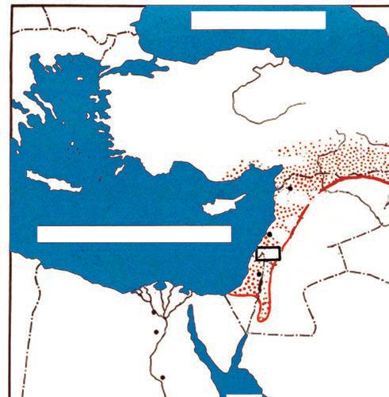<figcaption>Figure fig_ch01_p017_05 (Page 17)</figcaption></figure>
  <figure class="diagram-card" id="fig_ch01_p017_06">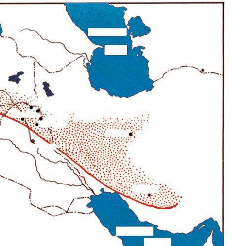<figcaption>Figure fig_ch01_p017_06 (Page 17)</figcaption></figure>
  <figure class="diagram-card" id="fig_ch01_p017_07"><figcaption>Figure fig_ch01_p017_07 (Page 17)</figcaption></figure>
  <div class="page-content">
    <p>”›šuśÆ†›ų§Œ¢ųšĞ§
z
z</p>
    <p>Ɯuā¡‘gÚ›“‘ÅĹÆ
Օ›¡}fŽc‹c
sŽ›ÿ}Æ</p>
    <p>‹žˆ}c</p>
    <p>÷œ–§</p>
    <p>sšǝ›Ä
s}Æ
e†</p>
    <p>‚Åڛ
¡ŒÅ–›Ä
—ǡž†</p>
    <p>z›¡„</p>
    <p>–››</p>
    <p>¡Œ›ǯ¢†›Äs}Æ</p>
    <p>Š›¢Ɨš–§
†šĹ‰›Ä
¡z›¢Úš</p>
    <p>—uš§–§</p>
    <p>¡Œǯ›‰šǯ§
–š“›¡sŒ›
sŽœc•š—›Å
zšÅ¢Œš</p>
    <p>–ÆÚ§</p>
    <p>–Œš</p>
    <p>gšÄ</p>
    <p>gšt§
ŠsžÄ</p>
    <p>¡Œ›cw§
‰c</p>
    <p>hz›ž§</p>
    <p>e¢ŠDz</p>
    <p>ǯš–</p>
    <p>¡xÿ}Æ</p>
    <p>¢ˆÅ•DzÄ
s}›}Ú§</p>
    <p>‹žˆ}c†›Žœä›Úžxůڐ¡}fՂ››Æ¢Žt¡ƀ}Ĺ›Ƃ¢„”c
sššŒ¢ƽš‹DzŒš¡‚‘›“s‘¡}e}›ǚš†Ĺ›ÆhƂ¢„”Ĺš§
Օ›¡} fŽc‹¡Œų§ ˆŽš“Ǚ u¢“•sÅ ˆų Í¡‰ÅЍ›Æ
▼§Î ‰‹ž›ǑŒšxůڐ mųš§ hƂ¢„”¡Ĺ“›¢”•›
ƀ›Úų‚§ h Ƃ¢„”c gų§ n¡‚š¡Ú ŽšzDzā‘¡} ‹šuŒš¡ų§
s¡ĬŚ¢Œš?</p>
    <p>ST-203-2-SOC. SCI-I (M)-9-VOL-1</p>
    <p>Ɯuā¡‘ gÚ›“‘ÅŚ†c Օ› fŽc‹›Ú“š†c Œ†•Dz¡Ž
¢ƂŽ›ƀ›ăv}sāÇm¡ŦƽšŒš›Ž›Ú¡Œų§ †ŒÚ§ ¢†šÚšc
z†–ctDzš“Å †“§
Œ†•Dzš ›“š–¢sůā‘¡}
mĴśĬš“Å †
–ÿœÅĴŒš–šŒž—›s–cvš}†c
‹¢•DzšÆˆųā‘¡}‹Dz‚ڝ“§
–š¢ÿ‚›s“›„Dz›Æ“ųŒšǯc
ǢšÄ¢Å§-&lt;</p>
    <p>17</p>
  </div>
</section><section class="page-section" id="page-18">
  <div class="page-header"><span class="page-number">Page 18</span></div>
  <figure class="diagram-card" id="fig_ch01_p018_01"><figcaption>Figure fig_ch01_p018_01 (Page 18)</figcaption></figure>
  <figure class="diagram-card" id="fig_ch01_p018_02"><figcaption>Figure fig_ch01_p018_02 (Page 18)</figcaption></figure>
  <figure class="diagram-card" id="fig_ch01_p018_03"><figcaption>Figure fig_ch01_p018_03 (Page 18)</figcaption></figure>
  <figure class="diagram-card" id="fig_ch01_p018_04"><figcaption>Figure fig_ch01_p018_04 (Page 18)</figcaption></figure>
  <figure class="diagram-card" id="fig_ch01_p018_05"><figcaption>Figure fig_ch01_p018_05 (Page 18)</figcaption></figure>
  <figure class="diagram-card" id="fig_ch01_p018_06"><figcaption>Figure fig_ch01_p018_06 (Page 18)</figcaption></figure>
  <figure class="diagram-card" id="fig_ch01_p018_07"><figcaption>Figure fig_ch01_p018_07 (Page 18)</figcaption></figure>
  <figure class="diagram-card" id="fig_ch01_p018_08"><figcaption>Figure fig_ch01_p018_08 (Page 18)</figcaption></figure>
  <figure class="diagram-card" id="fig_ch01_p018_09">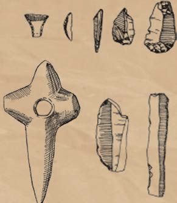<figcaption>Figure fig_ch01_p018_09 (Page 18)</figcaption></figure>
  <figure class="diagram-card" id="fig_ch01_p018_10"><figcaption>Figure fig_ch01_p018_10 (Page 18)</figcaption></figure>
  <figure class="diagram-card" id="fig_ch01_p018_11"><figcaption>Figure fig_ch01_p018_11 (Page 18)</figcaption></figure>
  <figure class="diagram-card" id="fig_ch01_p018_12"><figcaption>Figure fig_ch01_p018_12 (Page 18)</figcaption></figure>
  <figure class="diagram-card" id="fig_ch01_p018_13"><figcaption>Figure fig_ch01_p018_13 (Page 18)</figcaption></figure>
  <figure class="diagram-card" id="fig_ch01_p018_14"><figcaption>Figure fig_ch01_p018_14 (Page 18)</figcaption></figure>
  <figure class="diagram-card" id="fig_ch01_p018_15"><figcaption>Figure fig_ch01_p018_15 (Page 18)</figcaption></figure>
  <figure class="diagram-card" id="fig_ch01_p018_16"><figcaption>Figure fig_ch01_p018_16 (Page 18)</figcaption></figure>
  <figure class="diagram-card" id="fig_ch01_p018_17"><figcaption>Figure fig_ch01_p018_17 (Page 18)</figcaption></figure>
  <figure class="diagram-card" id="fig_ch01_p018_18"><figcaption>Figure fig_ch01_p018_18 (Page 18)</figcaption></figure>
  <figure class="diagram-card" id="fig_ch01_p018_19"><figcaption>Figure fig_ch01_p018_19 (Page 18)</figcaption></figure>
  <div class="page-content">
    <p>e Dzšc</p>
    <p>†“œ†”›šuś¡ iˆsŽā‘¡} x›Ņā‘š§ ‚ų›Ž›Úų‚§
x›Ņc†›Žœä›ă§g“¡}–“›¢”•‚sÇs¡Ĭŝs
z </p>
    <p>Œ›†–¡ƀ}Ĺ›iˆsŽāÇ</p>
    <p>z
z</p>
    <p>gŎciˆsŽāÇŒĴ›ÆՕ›¡xƮšÄŒ†•DzÅÚ§ –—šsŒš›
ŒŽcŒ›Úš†cŒĴ§i’‚Œ›Úš†chiˆsŽāÇe“¡Ž –—š
›ăg‚§Œ†•DzŽ¡}zœ“›‚Ĺ›Æ“›ŒšǯāÇÚ§‚}Úcs›ă
Օ›c sųsš›“‘Å՝c ‹¢äDzšÆˆųā‘¡} ǚ›ŽŒš
‹Dz‚ iƀšÚ› ‚ƉŒš› ǚ›Ž“š–“c sšÅ•›s÷šŒā‘c
“‘Åų“ų s‘›ŒÃˆšŅ†›Åƣš“c s‘›ŒĴ¡sšĬ   †›Åƣ›ă
gǐ›ss‘¡} iˆ¢šu“c š†Dz–c‹Žc –š DzŒšÚ› sšÅ•›s
Žcuŧ Œ›¢ăšÆˆš„†c –š DzŒš¢‚š¡} –Œž—Ĺ›¡ pŽ “›‹šuc
sšÅ•›sƂ“Åņā‘›Æ †›ų§ –ǵ‚ũŽš› e“Å s‘›ŒÃˆšŅ
†›Åƣšc ¡†§ŧ ‚}ā› Œǯ ¡‚š’›s‘›Æ nÅ¡ƀ}šÄ
‚}ā› eā¡† –Œž—c “›“›
¡‚š’›Æ“›‹šuāÇ iÇ¡ƀ}
ų‚š› Œš› g¢‚š¡} –Œž—ŽžˆœsŽĹ›Æ “› ŒšǯāÇ
Ú§ ‚}Úcs›ă gų§ †DZ sšų Œ†•DzŒ¢ųǯā‘¡}
e}›ǚš†c †“œ†”›šuś¡ h Œšǯā‘š§ gŎc Œšǯ
ā‘¡}ˆDžšĹĹ›š§Ƃ–›ŗˆŽš“Ǚu¢“•s†š¢ušÅÄ
£xƧhsšvĞ¡Ĺ͆“œ†”›šu“›ƃ“ΡŒų§ “›¢”•›ƀ›
ڝų‚§
¢ŒÆƀĚ “›“Žā‘¡} e}›ǚš†Ĺ›Æ †“œ†”›šuś¡
ŒšǯāÇpŽ¢ƌšxšÅĞš›e“‚Ž›ƀ›Ús</p>
    <p>18</p>
    <p>–šŒž—Dz”šȼc-</p>
  </div>
</section><section class="page-section" id="page-19">
  <div class="page-header"><span class="page-number">Page 19</span></div>
  <figure class="diagram-card" id="fig_ch01_p019_01"><figcaption>Figure fig_ch01_p019_01 (Page 19)</figcaption></figure>
  <figure class="diagram-card" id="fig_ch01_p019_02"><figcaption>Figure fig_ch01_p019_02 (Page 19)</figcaption></figure>
  <figure class="diagram-card" id="fig_ch01_p019_03"><figcaption>Figure fig_ch01_p019_03 (Page 19)</figcaption></figure>
  <figure class="diagram-card" id="fig_ch01_p019_04"><figcaption>Figure fig_ch01_p019_04 (Page 19)</figcaption></figure>
  <figure class="diagram-card" id="fig_ch01_p019_05"><figcaption>Figure fig_ch01_p019_05 (Page 19)</figcaption></figure>
  <div class="page-content">
    <p>”›šuśÆ†›ų§Œ¢ųšĞ§
z</p>
    <p>Ɯuā¡‘gÚ›“‘ÅĹÆ</p>
    <p>z</p>
    <p>z</p>
    <p>z</p>
    <p>z</p>
    <p>¢šs‹žˆ}c †›Žœä›ă§ x“¡} ‚ų›Ž›Úų †“œ†”›šu
¢sůāÇ n¡‚š¡Ú ŽšzDzā‘›š¡ų§ s¡Ĭś ˆĞ›s ˆžÅś
šÚs
‹žˆ}c</p>
    <p>¡zœ¡Úš</p>
    <p>†“œ†”›šu¢sůāÇ</p>
    <p>zšÅ¡Œš
e›¢sš•§
¡Œ—Åu§</p>
    <p>ŽšzDzc</p>
    <p>¡zœ¡Úš</p>
    <p>-------------------------------------------------</p>
    <p>zšÅ¡Œš</p>
    <p>-------------------------------------------------</p>
    <p>e›¢sš•§</p>
    <p>-------------------------------------------------</p>
    <p>¡Œ—Åu§</p>
    <p>------------------------------------------------ǢšÄ¢Å§-&lt;</p>
    <p>19</p>
  </div>
</section><section class="page-section" id="page-20">
  <div class="page-header"><span class="page-number">Page 20</span></div>
  <figure class="diagram-card" id="fig_ch01_p020_01"><figcaption>Figure fig_ch01_p020_01 (Page 20)</figcaption></figure>
  <figure class="diagram-card" id="fig_ch01_p020_02"><figcaption>Figure fig_ch01_p020_02 (Page 20)</figcaption></figure>
  <figure class="diagram-card" id="fig_ch01_p020_03"><figcaption>Figure fig_ch01_p020_03 (Page 20)</figcaption></figure>
  <figure class="diagram-card" id="fig_ch01_p020_04"><figcaption>Figure fig_ch01_p020_04 (Page 20)</figcaption></figure>
  <figure class="diagram-card" id="fig_ch01_p020_05"><figcaption>Figure fig_ch01_p020_05 (Page 20)</figcaption></figure>
  <figure class="diagram-card" id="fig_ch01_p020_06">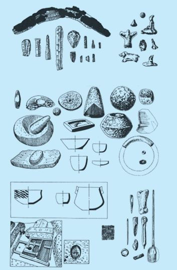<figcaption>Figure fig_ch01_p020_06 (Page 20)</figcaption></figure>
  <figure class="diagram-card" id="fig_ch01_p020_07"><figcaption>Figure fig_ch01_p020_07 (Page 20)</figcaption></figure>
  <figure class="diagram-card" id="fig_ch01_p020_08"><figcaption>Figure fig_ch01_p020_08 (Page 20)</figcaption></figure>
  <figure class="diagram-card" id="fig_ch01_p020_09"><figcaption>Figure fig_ch01_p020_09 (Page 20)</figcaption></figure>
  <figure class="diagram-card" id="fig_ch01_p020_10"><figcaption>Figure fig_ch01_p020_10 (Page 20)</figcaption></figure>
  <figure class="diagram-card" id="fig_ch01_p020_11"><figcaption>Figure fig_ch01_p020_11 (Page 20)</figcaption></figure>
  <figure class="diagram-card" id="fig_ch01_p020_12"><figcaption>Figure fig_ch01_p020_12 (Page 20)</figcaption></figure>
  <figure class="diagram-card" id="fig_ch01_p020_13"><figcaption>Figure fig_ch01_p020_13 (Page 20)</figcaption></figure>
  <figure class="diagram-card" id="fig_ch01_p020_14"><figcaption>Figure fig_ch01_p020_14 (Page 20)</figcaption></figure>
  <div class="page-content">
    <p>e Dzšc</p>
    <p>gšt›¡tÅ„›•§sųs‘›¡zšÅ¡Œš
¢šŠÅЧ  ¡z Ɩ›§  “š§  tÅ„›•§  sų
s‘›¡ f †›s gšt§  zšÅ¡Œš›Æ ˆŽš
“ Ǚ u ¢“ •  ś †§  ¢† Ķ ‚ǵc  † Æ s›  ‚§ 
zšÅ¡Œš›¡ z†āÇ ŠšÅ›c ŽĬ‚Žc
¢uš‚Ơc Օ› ¡xƫ›Žų f}›¡†c Œǯx›
Ɯuā¡‘c gÚ› “‘Åś‚›¡ź “Dzތš
–žx†s‘ŒĬ§ g“›}¡Ĺ “œ}sÇ ¡xs
}›s‘š›Žų  e“Å s‘›ŒĴ¡sšĬ§ Ɯu
ā‘¡}c Œ†•DzŽ¡}c ŽžˆāÇ †›Åƣ›
㛎ų  e“Å †›Åƣ›ă Œ†•DzŽžˆā‘›Æ
nǯ“c Ƃ š†¡ƀĞ‚§ uŋ››š ȼœ¡}
ŽžˆŒš§</p>
    <p>¡Œ—Åu§gŦDzÄ
iˆ‹žtįś¡
†“œ†”›šu
¢sůc
†“œ†”›šuś¡Ƃ š
†¡ƀĞ –“›¢”•‚s‘š
Ɯuā¡‘ gÚ›“‘ÅĹÆ
Օ› mų›“Ʃ§ ‚}Úc
s›ă Ƃšxœ†gŦDz›¡
f„Dz Ƃ¢„”Œš§ ¡Œ—Å
u§ g¢ƀšÇ  ˆšs›Ǚš
†›Æ  mų§ ˆŽš“Ǚu
¢“•sÅ sÚšÚų
h Ƃ¢„”¡Ĺ Ɩ§
Šš–§Úǯ§ q‰§ Šžx›
ǚšÄ (bread basket of
Baluchistan)mų§ “›‘›Úų</p>
    <p>20</p>
    <p>–šŒž—Dz”šȼc-</p>
    <p>“Dz‚DzǙ ”›šu sšvĞā¡‘ x“¡}
‚ų›Ž›Úų –žx†s‘¡} e}›ǚš†
śÆ “›”s†c ¡xƫ§ pŽ ›z›ǯÆ
ˆ‚›ƀ§ ‚ƮššÚ› –šŒž—Dz”šȼãƔ›Æ
Ƃ„Å”›ƀ›Ús
 
 
 </p>
    <p>z
z
z</p>
    <p>iˆsŽāÇ
iˆzœ“†Žœ‚›sÇ
f”“›†›Œc</p>
    <p>¢š—uc(Metal Age)
”›¡} ǚš†Ĺ§ ¢š—āÇ iˆ¢šu›ÚšÄ ‚}ā›
¢‚š¡} Œ†•DzÅ ¢š—uś¢Ú§ Ƃ¢“”›ă –š¢ÿ‚›s
“›„Dz›ÆŒ†•DzÅ£s“Ž›ă ˆ¢Žšu‚›“Dzތš›Ƃs}Œš
sųsšŒš§¢š—ucŒ†•DzÅf„DzŒš›iˆ¢šu›ă
¢š—c¡xƠš›Žų
ƂՂ›„ĹŒš ¡xƠ›¡† f ā‘c iˆsŽā‘ŒšÚ›
Œšǯų –š¢ÿ‚›sŽœ‚› h vĞśÆ Œ†•DzÅ £s“Ž›ă
f„Dzsš sšÅ•›s÷šŒā‘š xš‚Æ ¡—šs§ ‚Åڛ 
x¢š† “}ÚÄ –››  e›¢sš•§ gšÄ  mų›“›}ā
‘›Æ†›ųc ¡xƠ›¡ź–šų› Dzcs¡Ĭś›ĞĬ§Š›–›g
7000 Œš§g‚›¡źsšŒš›sÚšÚų‚§</p>
  </div>
</section><section class="page-section" id="page-21">
  <div class="page-header"><span class="page-number">Page 21</span></div>
  <figure class="diagram-card" id="fig_ch01_p021_01"><figcaption>Figure fig_ch01_p021_01 (Page 21)</figcaption></figure>
  <figure class="diagram-card" id="fig_ch01_p021_02"><figcaption>Figure fig_ch01_p021_02 (Page 21)</figcaption></figure>
  <figure class="diagram-card" id="fig_ch01_p021_03"><figcaption>Figure fig_ch01_p021_03 (Page 21)</figcaption></figure>
  <figure class="diagram-card" id="fig_ch01_p021_04"><figcaption>Figure fig_ch01_p021_04 (Page 21)</figcaption></figure>
  <figure class="diagram-card" id="fig_ch01_p021_05"><figcaption>Figure fig_ch01_p021_05 (Page 21)</figcaption></figure>
  <figure class="diagram-card" id="fig_ch01_p021_06"><figcaption>Figure fig_ch01_p021_06 (Page 21)</figcaption></figure>
  <figure class="diagram-card" id="fig_ch01_p021_07"><figcaption>Figure fig_ch01_p021_07 (Page 21)</figcaption></figure>
  <figure class="diagram-card" id="fig_ch01_p021_08"><figcaption>Figure fig_ch01_p021_08 (Page 21)</figcaption></figure>
  <figure class="diagram-card" id="fig_ch01_p021_09"><figcaption>Figure fig_ch01_p021_09 (Page 21)</figcaption></figure>
  <figure class="diagram-card" id="fig_ch01_p021_10"><figcaption>Figure fig_ch01_p021_10 (Page 21)</figcaption></figure>
  <figure class="diagram-card" id="fig_ch01_p021_11">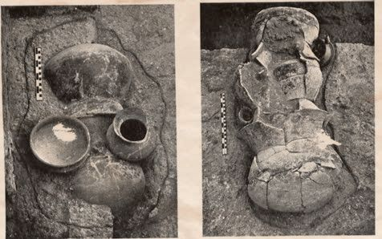<figcaption>Figure fig_ch01_p021_11 (Page 21)</figcaption></figure>
  <figure class="diagram-card" id="fig_ch01_p021_12">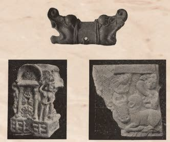<figcaption>Figure fig_ch01_p021_12 (Page 21)</figcaption></figure>
  <figure class="diagram-card" id="fig_ch01_p021_13"><figcaption>Figure fig_ch01_p021_13 (Page 21)</figcaption></figure>
  <figure class="diagram-card" id="fig_ch01_p021_14"><figcaption>Figure fig_ch01_p021_14 (Page 21)</figcaption></figure>
  <figure class="diagram-card" id="fig_ch01_p021_15"><figcaption>Figure fig_ch01_p021_15 (Page 21)</figcaption></figure>
  <figure class="diagram-card" id="fig_ch01_p021_16"><figcaption>Figure fig_ch01_p021_16 (Page 21)</figcaption></figure>
  <figure class="diagram-card" id="fig_ch01_p021_17"><figcaption>Figure fig_ch01_p021_17 (Page 21)</figcaption></figure>
  <div class="page-content">
    <p>”›šuśÆ†›ų§Œ¢ųšĞ§</p>
    <p>”›š iˆsŽā¡‘ÚšÇ ¡xƠ§ iˆsŽāÇڝǬ ¢ŒŶsÇ
m¡Ŧƽšc?
z
e†¢šzDzŒšfՂ››cŽžˆĹ›c Œšǯš†šsc
z
sž}‚Æsšc†›†›Æڝc
z
z</p>
    <p>‚šƤ”›šuc(Chalcolithic Age)
”›šu¡Ĺڝ›ă§ †ƣÇ ¢†Ž¡Ĺ xÅă¡xƫ“¢ƽš ¡xƠ§
¡sšĬǬiˆsŽāÇiˆ¢šu›ă sšvĞśc Œ†•DzÅ”›š
 āÇ i¢ˆä›ă›ƽ ”›š iˆsŽāǡښƀc ¡xƠ§ iˆsŽ
ā‘ciˆ¢šu›ăhsš¡Ĺ ‚šƤ”›šu¡Œųš§ “›‘›Úų‚§
gŦDz›Æ ŽšzǚšÄ Œ DzƂ¢„”§ Œ—šŽšȹ mų›“›}ā‘›Æ †›ų§
‚šƤ”›šuś¡ź†›Ž“ ›e“”›ǐāÇs¡Ĭś›ĞĬ§</p>
    <p>£„ŒšŠš„›Æ Œ—šŽšȹ †›ųc ‹›ă ”“
–cǘšŽĹ›†ˆ¢šu›ă›Žųs”āÇ</p>
    <p>¡†“š–š›Æ Œ—šŽšȹ †›ųc
‹›ăs‘›ŒĴ›c ”››c
‚œÅĹsš†›Åƣ›‚›sÇ</p>
    <p>¡“ÿuc(Bronze Age)
Š›–›g 6000 †c 3000 †c g}›Æ Œ†•DZÅ sš‘¡}c sšǮ›¡źc
”Þ›¡ Ƃ¢šz†¡ƀ}ĹšÄ ˆ~›ă sƀc xâ“Ĭ›c
“ĕ›c iˆ¢šu›ÚšÄ ‚}ā› ¢š—–cǗŽ“›„DZc sž}‚Æ
“›sš–c ¢†}›‚ƉŒš›Օ›“DZšˆsŒš“scŒ›¢ăšÆˆš„†c
–š DZŒš“sc ¡xƪ sšÅ•›¢s‚Ž iƈš„†āÇ ”ÞŒš“sc
Œ†•DZÅe‚›ž¡} †šuŽ›szœ“›‚Ĺ›†§–Ǵc –ċŒšssc¡xƪ
¢ušÅÄ£xƧ ŒšÄ¢Œs§–§—›c¡–Ɖ§
Œ†•DZÄ–Ǵc †›Åƣ›Úų </p>
    <p>ǢšÄ¢Å§-&lt;</p>
    <p>21</p>
  </div>
</section><section class="page-section" id="page-22">
  <div class="page-header"><span class="page-number">Page 22</span></div>
  <figure class="diagram-card" id="fig_ch01_p022_01"><figcaption>Figure fig_ch01_p022_01 (Page 22)</figcaption></figure>
  <figure class="diagram-card" id="fig_ch01_p022_02"><figcaption>Figure fig_ch01_p022_02 (Page 22)</figcaption></figure>
  <figure class="diagram-card" id="fig_ch01_p022_03"><figcaption>Figure fig_ch01_p022_03 (Page 22)</figcaption></figure>
  <figure class="diagram-card" id="fig_ch01_p022_04"><figcaption>Figure fig_ch01_p022_04 (Page 22)</figcaption></figure>
  <figure class="diagram-card" id="fig_ch01_p022_05"><figcaption>Figure fig_ch01_p022_05 (Page 22)</figcaption></figure>
  <figure class="diagram-card" id="fig_ch01_p022_06"><figcaption>Figure fig_ch01_p022_06 (Page 22)</figcaption></figure>
  <figure class="diagram-card" id="fig_ch01_p022_07"><figcaption>Figure fig_ch01_p022_07 (Page 22)</figcaption></figure>
  <figure class="diagram-card" id="fig_ch01_p022_08"><figcaption>Figure fig_ch01_p022_08 (Page 22)</figcaption></figure>
  <figure class="diagram-card" id="fig_ch01_p022_09"><figcaption>Figure fig_ch01_p022_09 (Page 22)</figcaption></figure>
  <figure class="diagram-card" id="fig_ch01_p022_10"><figcaption>Figure fig_ch01_p022_10 (Page 22)</figcaption></figure>
  <figure class="diagram-card" id="fig_ch01_p022_11"><figcaption>Figure fig_ch01_p022_11 (Page 22)</figcaption></figure>
  <figure class="diagram-card" id="fig_ch01_p022_12"><figcaption>Figure fig_ch01_p022_12 (Page 22)</figcaption></figure>
  <div class="page-content">
    <p>e Dzšc</p>
    <p>¡“ÿc q}§ 
(Bronze)
¡xƠc (Copper)
¡“‘Ĺœ“c
(Tin) ¢xÅŧ
–cǘŽ›ăĬšÚų
¢š—–ÿŽŒš§
¡“ÿc¡xƠ›¢†
ښÇiƀ ‹›
ڝų ¢š—Œš§
¡“ÿc</p>
    <p>†šuŽ›szœ“›‚Ĺ›¢ÚǬŒ†•DzŽ¡}s}ų“Ž“›¡†Ú›ăǬ
“›“ŽŒš›‚§ pŽ Ƃ¢„”ŧ z†āÇ ‚›ā›ƀšÅڝų‚c
ˆs‚››¢¡¢ƀŽc sšÅ•›¢s‚ŽƂ“Åņā‘š “›“› ‚Žc
£s¡Ĺš’›sÇ sŽs”Ƃ“ÅņāÇ să“}c ‚}ā›
“›Æ nÅ¡ƀЧ iˆzœ“†c †}ŝų‚Œš ǚ›‚›“›¢”•Œš§
͆šuŽ›s‚Îmų§“›¢”•›ƀ›Úų‚§“›”šŒš “œƒ›s‘c¡ˆš‚
¡sĞ›}ā‘c ¡Œă¡ƀĞ –sŽDzā‘c ‚›Ž¢Ú› zœ“›‚“c
“›¢†š„ā‘c †uŽzœ“›‚Ĺ›¡ź –“›¢”•‚s‘š§ ͆šuŽ›sÎ
zœ“›‚Ĺ›†§ fŽc‹cs›ă‚§ ¡“ÿuśš¡ų§ †›āÇ
ˆ~›ă›ĞĬ¢ƽš?
¡“ÿu–cǘšŽāÇn¡‚ƽš¡Œų§ˆĞ›s¡ƀ}Ĺs
z
z
z
z</p>
    <p>¡“ÿuśÆgŦDz›Æ“›sš–cƂšˆ›ă‚š§ —ŽƀĖcǘšŽc
—Žƀ¢Œš—Ä¡zš„š¢Žš¢šƒÆ‚}ā› †uŽāÇf–žŅ›‚Œš›
†›Åƣ›ă ¡ˆš‚¡sĞ›}āÇ “› s‘c (Great Bath), “œ}sÇ ¡‚Ž
“œƒ›sÇe’ÚxšsÇ š†DzƀŽsÇmų›“c“›“›
‚Žc£s¡Ĺš’›s‘¡}csă“}ś¡źc–šų› Dz“c
g“›}¡Ĺ †uŽ“Æڎ¡Ĺ †ŒÚ§ “DzތšÚ›ĹŽų
e‚¡sšĬš§ —ŽƀĖcǘšŽ¡Ĺ gŦDzšxŽ›ŅśÆ
–ž–›ŰƂ¢„”c
ÍpųDZ†uŽ“ÆڎcÎmų§“›¢”•›ƀ›Úų‚§</p>
    <p>–›Ű†„›c e‚›¡ź
¢ˆš•s†„›s‘c iÇ¡ƀ
}ų Ƃ¢„”Œš§ –ž
–›ŰƂ¢„”c</p>
    <p>¢“„sšc(Vedic Age)</p>
    <p>zÅƣÄgcøœ•§–ǵœ›•§
•DzÄ ¢ˆš‘›•§ gǯš
›Ä ǝš†›•§ Ƌĕ§
Œš†›Ämųœ ‹š•sÇ
g‚›ÆiÇ¡ƀ}ų</p>
    <p>¢“„ā‘›Æ †›ųŒš§ h sšvĞ¡Ĺڝ›ăǬ
e›“sÇ †ŒÚ§ ‹›Úų‚§  e‚›†šÆ h sš¡Ĺ
¢“„sš¡Œų§  “›‘›Úų Š›–›g 1500 †c 600 †c
g}›š§¢“„sšc</p>
    <p>—ŽƀĖcǘšŽĹ›¡ź ‚sÅăƩ¢”•c –ž–›Ű gŦDz
¡} “}Ú§  ˆ}›Ěš§  Ƃ¢„”ŧ s}ų“ų‚§ fŽDzŶš
Žš›Žų gÄ¢šž¢šˆDzÄ ‹š•šs}cŠĹ›Æ iÇ¡ƀ
gÄ¢š
}ų ‹š• –c–šŽ›ă›Žų“Žš›ŽųfŽDzŶšÅ‹š•šˆŽ
ž¢šƀDzÄ‹š•sÇ Œš ¡‚‘›“s‘¡}e}›ǚš†Ĺ›ÆfŽDzŶšŽ¡}zŶ¢„”c
–cȿ‚c ĹœÄ ÷œÚ§  Œ¢ Dz•Dzš¡ų§sŽ‚¡ƀ}ų</p>
    <p>22</p>
    <p>–šŒž—Dz”šȼc-</p>
  </div>
</section><section class="page-section" id="page-23">
  <div class="page-header"><span class="page-number">Page 23</span></div>
  <figure class="diagram-card" id="fig_ch01_p023_01"><figcaption>Figure fig_ch01_p023_01 (Page 23)</figcaption></figure>
  <figure class="diagram-card" id="fig_ch01_p023_02"><figcaption>Figure fig_ch01_p023_02 (Page 23)</figcaption></figure>
  <figure class="diagram-card" id="fig_ch01_p023_03"><figcaption>Figure fig_ch01_p023_03 (Page 23)</figcaption></figure>
  <figure class="diagram-card" id="fig_ch01_p023_04"><figcaption>Figure fig_ch01_p023_04 (Page 23)</figcaption></figure>
  <figure class="diagram-card" id="fig_ch01_p023_05"><figcaption>Figure fig_ch01_p023_05 (Page 23)</figcaption></figure>
  <figure class="diagram-card" id="fig_ch01_p023_06"><figcaption>Figure fig_ch01_p023_06 (Page 23)</figcaption></figure>
  <figure class="diagram-card" id="fig_ch01_p023_07"><figcaption>Figure fig_ch01_p023_07 (Page 23)</figcaption></figure>
  <figure class="diagram-card" id="fig_ch01_p023_08"><figcaption>Figure fig_ch01_p023_08 (Page 23)</figcaption></figure>
  <figure class="diagram-card" id="fig_ch01_p023_09"><figcaption>Figure fig_ch01_p023_09 (Page 23)</figcaption></figure>
  <figure class="diagram-card" id="fig_ch01_p023_10"><figcaption>Figure fig_ch01_p023_10 (Page 23)</figcaption></figure>
  <figure class="diagram-card" id="fig_ch01_p023_11"><figcaption>Figure fig_ch01_p023_11 (Page 23)</figcaption></figure>
  <figure class="diagram-card" id="fig_ch01_p023_12"><figcaption>Figure fig_ch01_p023_12 (Page 23)</figcaption></figure>
  <figure class="diagram-card" id="fig_ch01_p023_13"><figcaption>Figure fig_ch01_p023_13 (Page 23)</figcaption></figure>
  <figure class="diagram-card" id="fig_ch01_p023_14"><figcaption>Figure fig_ch01_p023_14 (Page 23)</figcaption></figure>
  <figure class="diagram-card" id="fig_ch01_p023_15"><figcaption>Figure fig_ch01_p023_15 (Page 23)</figcaption></figure>
  <figure class="diagram-card" id="fig_ch01_p023_16"><figcaption>Figure fig_ch01_p023_16 (Page 23)</figcaption></figure>
  <div class="page-content">
    <p>”›šuśÆ†›ų§Œ¢ųšĞ§</p>
    <p>¢“„sš¡ĹŽĬš›‚Žc‚›Ž›Úų
f„Dzsš ¢“„sšc
k¢uǵ„cŽx›ăsšc</p>
    <p>¢“„
sšc
ˆ›Æښ ¢“„sšc
zžÅ–šŒeƒÅ“
¢“„āÇŽx›ăsšc</p>
    <p>f„Dzsš ¢“„sšĹ›¡c ˆ›Æښ ¢“„sšĹ›¡c
z†zœ“›‚¡Ĺ†ŒÚ§‚šŽ‚ŒDzc¡xƮDZ
f„Dzsš ¢“„sšc</p>
    <p>ˆ›Æښ ¢“„sšc</p>
    <p>z</p>
    <p>–ž–›ŰƂ¢„”c</p>
    <p>z</p>
    <p>ucuš–Œ‚c“¡Ž “Dzšˆ›ă</p>
    <p>z</p>
    <p>g}–Ơ„§“Dz“ǚ</p>
    <p>z</p>
    <p>Օ›Ú§Ƃ š†Dzc†Æs›</p>
    <p>z</p>
    <p>eÅ †š¢}š}›sÇ</p>
    <p>z</p>
    <p>ǚ›Ž“š–zœ“›‚c</p>
    <p>z</p>
    <p>–Œž—Ĺ›Æ
ȼœsÇÚ§‚šŽ‚¢ŒDz†
iÅų ǚš†c</p>
    <p>z</p>
    <p>ȼœs‘¡}–šŒž—›sˆ„“›Ú§
Œā¢ǯ</p>
    <p>z</p>
    <p>gŽƠ›¡źiˆ¢šuc</p>
    <p>z</p>
    <p>“ÅĴ“Dz“ǚ”Þ›¡ƀ}ų</p>
    <p>z</p>
    <p>šuāÇ–ÿœÅĴ“c¡x
¢“›‚Œš›šuāÇ
pŽƂ¢‚Dzs“›‹šuś¡ź
ŒšŅce ›sšŽŒš›Œš›</p>
    <p>z</p>
    <p>sš}§¡“Ğ›¡Ĺ‘›ăc
‚œ›ĞcՕ›¡xƫ</p>
    <p>z</p>
    <p>†›Ž“ ›¢ušŅāÇ
¢xÅų‚š›Žų
–Œž—c</p>
    <p>z</p>
    <p>z</p>
    <p>¢“„–š—›‚Dzc
Í¢“„cÎ mųšÆ e›“§
“›„§  mųš§ eŃc
¢“„āÇ †š¡ĴŒš§ 
e“k¢uǵ„czžÅ¢“„c
–šŒ¢“„c eƒÅ“¢“„c
mų›“š§    g“›Æ
k¢uǵ„Œš§  f„Dz¢Ĺ‚§ 
†š¢“„āÇ sž}š¡‚
e†ŠŰā‘š›ƖšǦ
āÇ fŽDzsāÇ
i ˆ † › • ŝ s Ç  m ų ›
“  c  ¢ “ „ – š — › ‚ Dz
ś¡ź ‹šuŒš§ ¢“„
sš¡Ĺڝ›ăǬˆ~†
ś†šǬnǯ“cƂ š
†¡ƀĞ ¢ǟš‚ǡš§ ¢“„
–š—›‚Dzc</p>
    <p>“ÅĴ“Dz“ǚ</p>
    <p>“ÅĴādžš¡Ĵc
iĬš›Žųˆ¢Žš
—›‚DzśÆnÅ¡ƀĞ“Å
ƖšǦŽcŽšzDz‹Ž“c
–cŽä“c†}ś“Å
šuāǐ‘›‚“c
äŅ›ŽcՕ››c
q¢Žšs}cŠ†šƒ†c z Ƃ¢‚DzsfŽš †šŒžÅśsÇ să“}ścnÅ¡ƀĞ›
¡xƮš“ų“Œš›
Žžˆ¡ƀ}ų
Žų“Å£“”DzŽch
Žų
Œžų§“›‹šuāÇڝc
z“›“› sŽs”“›„Dzs‘¡}
„š–Dzƾś ¡xƫ›Žų“Å
ƂՂ›”Þ›s¡‘
‚}Úc
”žŝŽcf›Žų
fŽš ›ă</p>
    <p>”›šuśÆ †›ų§ ¢š—uś¢ÚǬ ŒšǯāÇ –cŠŰ›ă§
pŽ¡–Œ›†šÅ–cv}›ƀ›Ús</p>
    <p>ǢšÄ¢Å§-&lt;</p>
    <p>23</p>
  </div>
</section><section class="page-section" id="page-24">
  <div class="page-header"><span class="page-number">Page 24</span></div>
  <figure class="diagram-card" id="fig_ch01_p024_01"><figcaption>Figure fig_ch01_p024_01 (Page 24)</figcaption></figure>
  <figure class="diagram-card" id="fig_ch01_p024_02"><figcaption>Figure fig_ch01_p024_02 (Page 24)</figcaption></figure>
  <figure class="diagram-card" id="fig_ch01_p024_03"><figcaption>Figure fig_ch01_p024_03 (Page 24)</figcaption></figure>
  <figure class="diagram-card" id="fig_ch01_p024_04"><figcaption>Figure fig_ch01_p024_04 (Page 24)</figcaption></figure>
  <figure class="diagram-card" id="fig_ch01_p024_05"><figcaption>Figure fig_ch01_p024_05 (Page 24)</figcaption></figure>
  <figure class="diagram-card" id="fig_ch01_p024_06"><figcaption>Figure fig_ch01_p024_06 (Page 24)</figcaption></figure>
  <div class="page-content">
    <p>e Dzšc</p>
    <p>Œš†“xŽ›Ņś¡ź ‚}ړc sšâŒĹ›Ĭš “›sš–ā‘Œš§
hˆš~‹šuŧ†ƣÇsĬ‚§sšĞ›c u—s‘›cŒŽ¡ƀšĹs‘›c
zœ“›ă§ƂՂ›¢š}cƜuā¢‘š}c¡ˆšŽ‚›“›¢“s“cŠŗ›”Þ›c
¡sšĬ Œ¢ųšĞǬ Ƃšc ‚}ā› Œ†•DzÅ ‚¡ź f“”DzāÇ
Œ†ǡ›šÚ›e‚›††Ǖ‚ŒšsĬˆ›}Ĺā‘cǕǐ›s‘c†}ś
ˆ¢Žšu‚›¡}ˆš‚›¢›pŽ†šuŽ›sŽš›Œš›Œ†•DzÅe“Ž¡}
‚š–šŒž—›sŽšȹœ–šƠśs–c“› š†āÇŽžˆ¡ƀ}Ĺ›gų§
21šc †žǯšĬ›¢Ú§ mś†›Æڝ¢ƠšÇ Œš†“xŽ›Ņś¡ź “›“›
“›sš–vĞā‘›¢Ú§ ‚›Ž›Ě¢†šÚ¢ƠšÇ Œ†•DzÅ mŅ„žŽc
Œ¢ųšĞ¢ˆš› mų§ †ŒÚ§ e›“š†c Œ†ǡ›šÚ“š†c –š ›
ڝų
‚}ÅƂ“ÅņāÇ</p>
    <p>24</p>
    <p>z</p>
    <p>f„DzsšŒ†•DzÅ iˆ¢šu›ă›Žų f ā‘¡}c iˆsŽā‘¡}c
x›ŅāÇiÇ¡ƀ}Ĺ› ›z›ǯÆfƊcfƊc‚ƮššÚs</p>
    <p>z</p>
    <p>“›“› ”›šuvĞā‘›¡Œ†•DzÅiˆ¢šu›ă›Žųf āÇiˆsŽāÇ
mų›“¡}ŒšĶssdž›Åƣ›ă§–šŒž—Dz”šȼ㚖›ÆƂ„Å”›ƀ›Ús</p>
    <p>z</p>
    <p>Œš†“xŽ›Ņˆ¢Žšu‚›¡}Ƃ š†ŒšǯāÇiÇ¡ƀ}Ĺ›pŽ›z›ǯÆƂ–¢ź•Ä
e“‚Ž›ƀ›Ús</p>
    <p>z</p>
    <p>f„DzsšŒ†•Dzzœ“›‚“Œš› ŠŰ¡ƀĞ ǚāÇ e}š‘¡ƀ}Ĺ› eǯ§–§
†›Åƣ›Ús</p>
    <p>–šŒž—Dz”šȼc-</p>
  </div>
</section><section class="page-section" id="page-25">
  <div class="page-header"><span class="page-number">Page 25</span></div>
  <figure class="diagram-card" id="fig_ch01_p025_01"><figcaption>Figure fig_ch01_p025_01 (Page 25)</figcaption></figure>
  <figure class="diagram-card" id="fig_ch01_p025_02"><figcaption>Figure fig_ch01_p025_02 (Page 25)</figcaption></figure>
  <figure class="diagram-card" id="fig_ch01_p025_03"><figcaption>Figure fig_ch01_p025_03 (Page 25)</figcaption></figure>
  <figure class="diagram-card" id="fig_ch01_p025_04"><figcaption>Figure fig_ch01_p025_04 (Page 25)</figcaption></figure>
  <div class="page-content">
    <p>2</p>
    <p>f”ā‘c
f„DzsšŽšȹā‘c
‘–›ŗšÅƒÄŽšz“œƒ››ž¡}ŽƒĹ›Æ
–ĕŽ›Ú¢ƠšÇ‚œÅŝce“”†š
pŽƾŗ¡†sĬeƺcs’›Ě¢ƀšÇ
uŽ‚ŽŒš¢ŽšucŠš ›ă§“›ƩųpŽ
Œ†•Dz¡†csšsĬš›e‚s’›
Ě¢ƀšÇ¡“Ǭŝ›ˆ‚ƀ›ă§x}
sšĞ›¢Ú§“›ˆ›ă¡sšĬ§f‘sÇ
xŒ›¢ǯ›¡ÚšĬ ¢ˆšsųpŽ
”“”ŽœŽ“csĬ¢“„†šz†sŒšh
sš’§xsÇڝ¢”•ce¢Ŕ—c ¡‚Ž“›Æ
‹›ä¡}ÚųpŽ–†Dzš–›¡
sšsĬš›‹‚›s„dtā¡‘šųc
gƽš¡‚”šŦ†šc–¢Ŧš•¢Ĺš¡}c
sš¡ƀĞh–†Dzš–›–›ŗšÅƒ¡†
fsŕ›ăg‚š§e¢Ŕ—¡Ĺ
”šŦ›c–Œš š†“c ¢†}š†ǬŒšÅuc
–†Dzš–Œš¡ų‚œŽŒš†Ĺ›¡Ĺ›ă‚§’
mmÆŠš•DZ„›“ĬÅ„šǯ§ “š–§gŦDz
Žžˆ sƠ†›</p>
    <p>Š›–›g 6šc †žǯšĬ›Æ gŦDz›Æ zœ“›ă›Žų ‚‚ǵx›Ŧs†š u‚ŒŠŗ¡ź zœ“›‚
“Œš› ŠŰ¡ƀĞ pŽ –c‹“sƒš›‚§ ŽšzsŒšŽ†š› –Ơų‚›c –t¢š
ˆ‚›c zœ“›ă›Ğc –¢Ŧš•c ‹›Úš‚›Žų –›ŗšÅƒ¡ź zœ“›‚Ĺ›Æ “’›Ĺ›Ž›“
ĬšÚ›–c‹“Œš§ g‚›Æ“›“Ž›Úų‚§‚¡źxǯˆš}ŒǬŒ†•DzŽ¡}„dtā‘¡}
sšŽc e¢†ǵ•›ă§ –†Dzš–c –ǵœsŽ›ă –›ŗšÅƒÄ čš¢†š„c ¢†}› ˆ›ÆښĹ§
u‚ŒŠŗÄmų›¡ƀН</p>
  </div>
</section><section class="page-section" id="page-26">
  <div class="page-header"><span class="page-number">Page 26</span></div>
  <figure class="diagram-card" id="fig_ch01_p026_01"><figcaption>Figure fig_ch01_p026_01 (Page 26)</figcaption></figure>
  <figure class="diagram-card" id="fig_ch01_p026_02"><figcaption>Figure fig_ch01_p026_02 (Page 26)</figcaption></figure>
  <figure class="diagram-card" id="fig_ch01_p026_03"><figcaption>Figure fig_ch01_p026_03 (Page 26)</figcaption></figure>
  <figure class="diagram-card" id="fig_ch01_p026_04"><figcaption>Figure fig_ch01_p026_04 (Page 26)</figcaption></figure>
  <figure class="diagram-card" id="fig_ch01_p026_05"><figcaption>Figure fig_ch01_p026_05 (Page 26)</figcaption></figure>
  <figure class="diagram-card" id="fig_ch01_p026_06">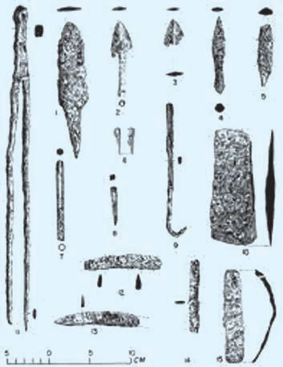<figcaption>Figure fig_ch01_p026_06 (Page 26)</figcaption></figure>
  <div class="page-content">
    <p>e Dzšc</p>
    <p>Š›–›g 6šc †žǯšĬ§ ¢šsxŽ›Ņś¡ Nj¢ŗŒš sšvĞ
Œš›Žų gŦDz›Æ “Å Œš† Œ—š“œŽÄ u‚ŒŠŗÄ gš†›Æ
–Ž‚ȹ£x†›ÆsÉDzž•Dz–§÷œ–›Æ¡—šã›ǯ–§‚}ā›“Å
ˆ‚›f”āÇƂxŽ›ƀ›ăsšŒš›Žųg‚§¢šsśšsŒš†c
–šƠśsŽšȹœŽcuā‘›cŒšǯāÇƂ‚Dzä¡ƀĞhsšvĞ
śÆˆ‚›Žšȹ–c“› š†ā‘c†›“›Æ“ųeŎcŒšǯā¡‘
ڝ›ăš§he DzšĹ›Æ†šcxÅă¡xƮų‚§</p>
    <p>ucuš‚}ś¡f”“›ƃ“c
Š›–›g fšc †žǯšĬ›Æ gŦDz›Æ ˆ‚›
f”āÇ Žžˆc¡sšĬ‚§  Ƃ š†Œšc ucuš
‚}śš›Žų †“œ†š”ā‘¡} “‘Å㍛Æ
ucuš‚}ś¡ ‹‚›s–š—xŽDzāÇ Ƃ š†
ˆÿ“—›ă h ‹‚›s–š—xŽDzā¡‘ Žžˆ¡ƀ}
ś‚§x“¡}ƀųv}sā‘š›Žų
</p>
    <p>zgŽƠˆsŽā‘¡} “Dzšˆsiˆ¢šuc</p>
    <p></p>
    <p>zsšÅ•›¢sšÆˆš„†“Å</p>
    <p></p>
    <p>f„DzsšgŽƠˆsŽāÇ</p>
    <p>†“§
zsă“}c†uŽāÇmų›“¡}“‘Åă</p>
    <p>Š›–›g fšc †žǯš¢Ĭš¡} Օ›¡c sųsš
›s¡‘c fNj›ăǬ pŽ –šŒž—›s–šƠśs
“Dz“ǚ ucuš‚}śÆ iÅų“ų g‚§ šu
āÇڝcƜuŠ›Úc ƂšŒtDzc†Æs››Žų¢“„sš
fxšŽ“Œš›¡ˆšŽĹ¡ƀĞ‚š›Žų›ƽšuā‘¡}
‹šuŒš› sųsš›s¡‘ “DzšˆsŒš› Š›¡sš}
ڝų‚§ e“¡ fNj›ăǬ Օ›¡ Ƃ‚›sž
Œš› Šš ›ă ¢“„sš fxšŽāǡڂ›¡Ž x›Ŧ›
ښÄg‚§¢ƂŽš›</p>
    <p>“DzšˆšŽˆ¢Žšu‚››ž¡} ¡Œă¡ƀĞ ‹‚›s–š—xŽDzc £s“ų
£“”DzÅ e‚›†›āų ‚ŽĹ›Ǭ iÅų –šŒž—›sǚš†c
f÷—›ă›Žų
gښĹ§ “ÅĴ“Dz“ǚƩ§ ˆĹcx›“›‹šuāÇiÅų“ų
g“›Æ Ƃ š†¡ƀĞ“Žš›Žų †š€DzŽš u—ˆ‚›sÇ să“}c
¡‚š’›šÚ›g“Å‹žŒ›£s“”c“㛎ųgŎśÆ–šƠśs
Œš›iÅų¢Nj››Æ†›ų›Žųg“Å¡Œă¡ƀĞ–šŒž—›sǚš†c
¢†}› h –šŒž—›sˆDžšĹĹ›š§ ˆ‚› f” šŽsÇ
iÅų“ų‚§ gŎc f” šŽs‘›Æ Ƃ š†¡ƀĞ“š›Žų
£z†ŠŗŒ‚ „Å”†āÇ £“”DzÅ u—ˆ‚›sÇ ‚}ā›“Ž¡}
ˆ›Ŧhf”āÇÚ§‹›ă›Žų</p>
    <p>26</p>
    <p>–šŒž—Dz”šȼc-</p>
  </div>
</section>
    </main>
    <footer>
      <div class="nav-bar"><span class="nav-bar disabled"></span><a href="index.html">☰ Index</a><a href="part_1_chapter_02.html">Chapter 2 (Pages 27-46) →</a></div>
      <p style="text-align: center; font-size: 0.85rem; color: var(--text-muted); margin-top: 2rem;">
        Kerala SCERT Class 9 Basic_science (Malayalam Medium) - Extracted Study Text
      </p>
    </footer>
  </div>
</body>
</html>
